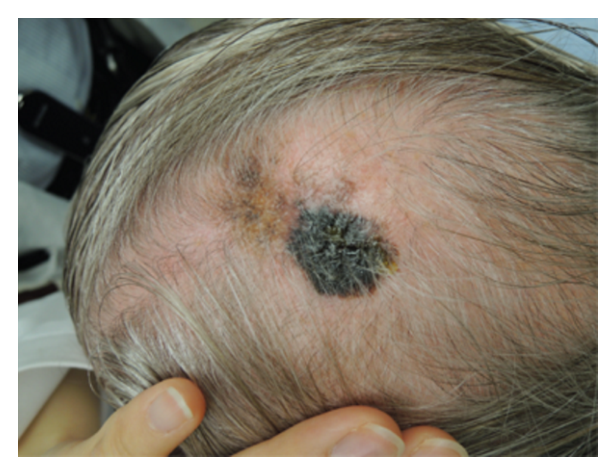
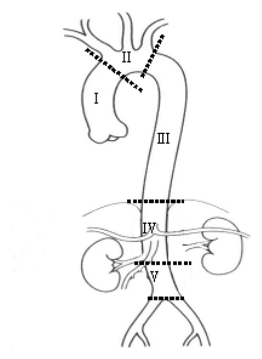
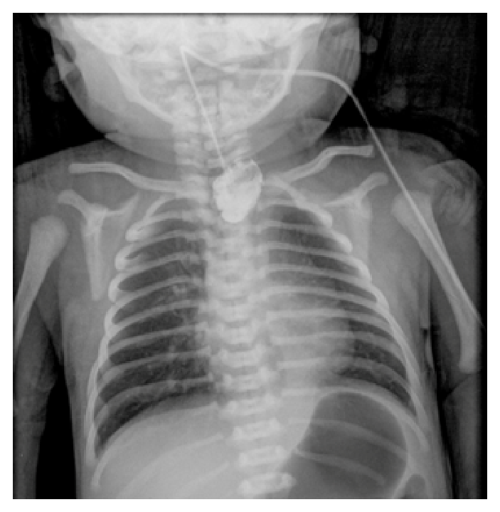
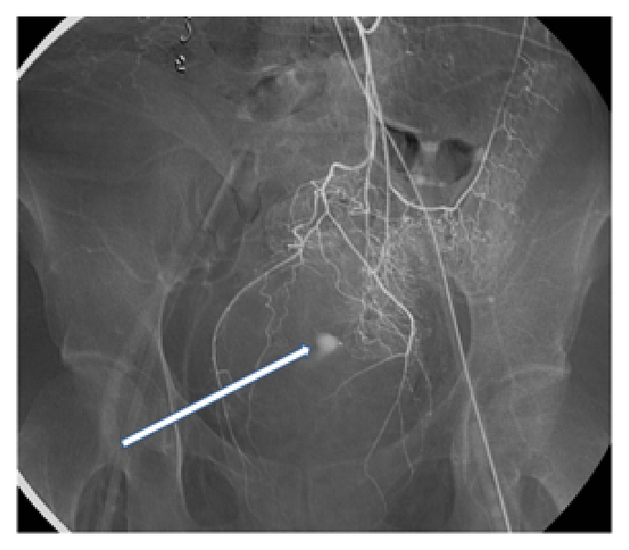
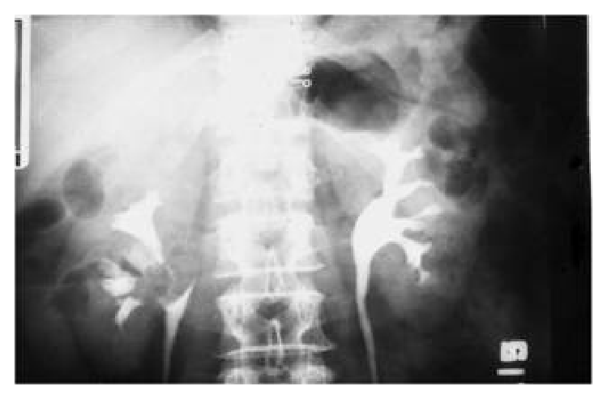
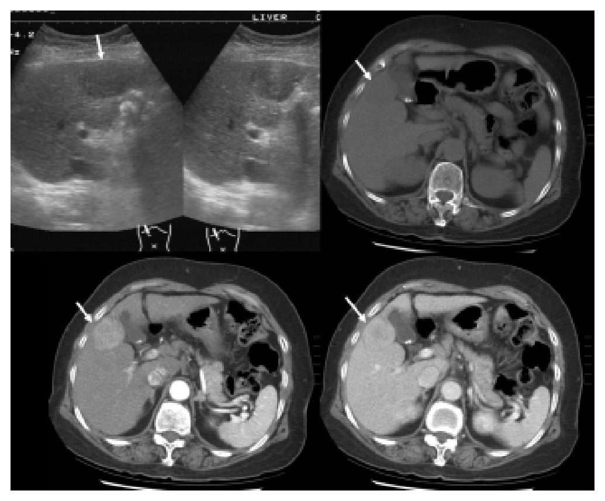

開卷有益 ／
醫師 ／ 醫學（五）（包括外科、骨科、泌尿科等科目及其相關臨床實例與醫學倫理） ／ 109 年第 2 次109 年第 2 次醫師醫學（五）（包括外科、骨科、泌尿科等科目及其相關臨床實例與醫學倫理）試題與答案
這一頁是民國 109 年第 2 次醫師醫學（五）（包括外科、骨科、泌尿科等科目及其相關臨床實例與醫學倫理）的整份歷屆試題，共 80 題，題目與標準答案出自考選部「國家考試試題及測驗式試題答案」開放資料，其中 80 題附有詳解。以下逐題列出題幹、選項與答案；要計時作答或記錄成績，請用線上練習。
考選部原始場次代碼：109080
線上作答這一科 →
全部 80 題
第 1 題
下列有關零期乳癌（carcinoma in situ）的敘述，何者錯誤？
（A） 常伴隨有顯微鈣化（microcalcifications）（B） 較易有多發性病兆（multifocal lesions）（C） 手術治療包含level II腋下淋巴廓清（axillary lymph node dissection up to level II）（D） 手術切除後不需化學藥物治療答案：（C）
詳解與考點 正解：零期乳癌為原位癌（carcinoma in situ），病灶尚未侵犯基底膜，通常不需因腋窩轉移而例行施行 level II 腋下淋巴廓清。故（C）將其列為手術治療內容錯誤。
A：原位導管癌常藉乳房攝影的顯微鈣化發現；（A）符合其常見影像表現，故非答案。
B：原位癌可呈多灶或較廣泛分布，這會影響局部切除與乳房切除的選擇；（B）敘述可成立。
D：原位癌切除後的全身治療需依病理與受體狀態個別考量，但不以化學治療作為常規；（D）在本題的概括敘述下並非錯誤。
本題考點：乳房原位癌（breast carcinoma in situ）未侵犯基底膜；腋窩處置（axillary staging）須依浸潤風險決定，不能把浸潤性乳癌的例行腋窩廓清直接套用。
第 2 題
頸部穿刺傷（Neck Penetrating Injury）是一項會致命的傷害，下列對於Zones of The Neck敘述，何者錯誤？
（A） The most accessible surgical zone是Zone II（B） Zone II範圍從cricoid cartilage往上至the angle of mandible（C） Zone I範圍從the angle of mandible至skull base（D） Zone III範圍包含大血管，不容易以手術方式進去處理答案：（C）
詳解與考點 正解：頸部穿刺傷的三分區解剖。Zone I 位於鎖骨／胸骨上切跡至環狀軟骨，Zone II 位於環狀軟骨至下顎角，Zone III 才是下顎角至顱底；因此（C）把 Zone I 的範圍寫成 Zone III，為錯誤敘述。
A：Zone II 暴露相對直接，傳統上是最容易以手術探查的區域；（A）正確。
B：（B）所列環狀軟骨至下顎角正是 Zone II 的範圍，故非答案。
D：Zone III 鄰近顱底，包含重要血管結構且手術近端控制困難；（D）正確。
本題考點：頸部創傷分區（neck zones）——Zone I 為胸廓入口、Zone II 為環狀軟骨至下顎角、Zone III 為下顎角至顱底；分區有助判斷血管與氣消化道傷害的評估及處置難度。
第 3 題
病患手術前有使用vitamin K antagonist（VKA），例如warfarin， 會增加手術中出血的機會；一般在electivesurgery前，建議先停藥5天以上，讓international normalized ratio（INR）上限低於多少以下，再進行手術？
（A） 2.0（B） 1.8（C） 1.5（D） 1.2答案：（C）
詳解與考點 正解：接受 warfarin 的病人進行選擇性手術前，須讓凝血功能回復到可接受範圍以降低出血風險。一般停用 VKA 後，以 INR <1.5 作為可進行多數手術的常用門檻，因此選 C。
A：INR 2.0 仍屬明顯抗凝狀態，對一般侵入性手術的出血風險過高。
B：INR 1.8 雖較治療中的 INR 低，但通常未達本題所問的術前常用安全門檻。
D：INR 1.2 更接近正常值，但把門檻訂得過嚴，並非本題所問的上限。
本題考點：維生素 K 拮抗劑（vitamin K antagonist, VKA）術前管理；國際標準化比值（international normalized ratio, INR）反映 warfarin 抗凝強度，選擇性手術前常以 <1.5 作為凝血矯正目標。
第 4 題
大量出血或休克的病患，容易造成所謂lethal triad，下列何者不屬於lethal triad？
（A） arrhythmia（B） acidosis（C） hypothermia（D） coagulopathy答案：（A）
詳解與考點 正解：大量出血與休克的 lethal triad，經典三項為低體溫（hypothermia）、酸中毒（acidosis）與凝血病變（coagulopathy）。心律不整雖可能出現在危重病人，卻不屬於此三聯徵，故選 A。
B：組織灌流不足造成乳酸累積可導致酸中毒；（B）是 lethal triad 的一項。
C：失血、暴露與大量輸液均可能使體溫下降；（C）是 lethal triad 的一項。
D：低體溫、酸中毒與失血相互惡化凝血功能；（D）是 lethal triad 的一項。
本題考點：創傷致死三聯徵（lethal triad）——低體溫、酸中毒、凝血病變會彼此放大出血與休克，復甦時須同步處理。
第 5 題
surgical site infection（SSI）是術後常見的合併症，對於傷口的分類及其SSI的發生率敘述，下列何者錯誤？
（A） clean wound: no hollow viscus entered, primary wound closure; SSI發生率：0.1～0.3%（B） clean-contaminated wound: hollow viscus entered but controlled; SSI發生率：5～8%（C） contaminated wound: uncontrolled spillage from viscus; SSI發生率：20～25%（D） dirty wound: untreated, uncontrolled spillage from viscus; SSI發生率：30～40%答案：（A）
詳解與考點 正解：傷口污染程度與手術部位感染率的對應。清潔傷口（clean wound）雖未進入中空臟器且一期關閉，感染風險最低，但（A）列的 0.1～0.3% 過低，不符合常用的傷口分類感染率範圍，故為錯誤敘述。
B：受控制進入中空臟器的 clean-contaminated wound 污染程度較清潔傷口高；（B）所述感染率範圍符合其相對風險，故非答案。
C：中空臟器內容物無法控制外溢屬 contaminated wound，感染風險顯著增加；（C）正確。
D：既有感染或未處理、無法控制的污染屬 dirty wound，四類中感染風險最高；（D）正確。
本題考點：手術傷口分類（surgical wound classification）依污染程度分為 clean、clean-contaminated、contaminated、dirty；手術部位感染（surgical site infection, SSI）風險隨污染程度遞增。
第 6 題
有關傷口癒合過程的敘述，下列何者錯誤？
（A） 組織受傷後首先進入發炎期（inflammatory phase），在此時期因血小板凝集後產生血管擴張物質，而導致血管管壁滲透力增加，增加血漿滲入細胞外組織，同時產生趨化因子（chemokine），使得發炎細胞如中性白血球移往受傷組織（B） 於增生期（proliferative phase）時，大部分的纖維母細胞（fibroblast）會經由巨噬細胞產生的趨化作用，自受傷處以外的組織隨血液循環運送至受傷部位，並於受傷組織中合成膠原蛋白（collagen）（C） 肌纖維母細胞（myofibroblast）於組織受傷後約6天形成，主要功能為分泌 α-平滑肌肌動蛋白（α-smoothmuscle actin）並形成應力纖維（stress fiber），於成熟期（maturation phase）負責傷口攣縮現象（D） 於傷口癒合過程中發生的基質（matrix）合成，第三型膠原蛋白較第一型膠原蛋白較早形成答案：（B）
詳解與考點 正解：增生期纖維母細胞的來源與移動方式。纖維母細胞主要由傷口周圍的結締組織遷移進入傷口，受生長因子與趨化訊號吸引，並非自遠處組織隨血液循環運送至傷口；故（B）錯誤。
A：受傷後血小板與發炎介質引發血管通透性增加及白血球趨化，符合發炎期的主要反應，故非答案。
C：肌纖維母細胞表現 α-平滑肌肌動蛋白並形成應力纖維，參與傷口收縮；（C）敘述正確。
D：傷口早期先以第三型膠原蛋白為主，成熟重塑時逐步由第一型膠原蛋白取代；（D）正確。
本題考點：傷口癒合（wound healing）依序包含發炎期、增生期與成熟期；纖維母細胞（fibroblast）由周邊遷移並合成膠原蛋白，肌纖維母細胞（myofibroblast）負責傷口收縮。
第 7 題
根據流行病學之研究，吸菸與下列何種癌症無關？
（A） 膀胱癌（B） 食道癌（C） 胰臟癌（D） 大腸癌本題送分，無標準答案
詳解與考點 本題官方公告送分。
第 8 題
關於開腹手術後，引流管中消化液流失的相關注意事項，下列何者錯誤？
（A） 胃液每天分泌約達1,000～2,000毫升，大量流失可能引起鉀離子缺乏（B） 腸液為每天分泌最多之消化液，大量流失可能造成酸血症（C） 膽汁每天分泌約達300～800毫升，其中的碳酸氫離子（HCO3-）濃度比腸液、胰液還高（D） 胰液呈透明狀，為鹼性消化液，每天分泌約達600～800毫升答案：（C）
詳解與考點 正解：各消化液流失時的酸鹼與電解質影響。胰液與腸液富含碳酸氫離子，膽汁的 HCO3- 濃度並不比兩者都高；因此（C）錯誤。
A：胃液大量流失會帶走氫離子、氯離子與鉀離子，可能造成低鉀；（A）正確。
B：腸液量大且含碳酸氫離子，大量流失可造成碳酸氫離子流失而出現代謝性酸中毒；（B）正確。
D：胰液為鹼性消化液，含碳酸氫離子以中和胃酸；（D）正確。
本題考點：消化液生理（digestive secretions）——胃液流失常導向低氯、低鉀與代謝性鹼中毒；胰液與腸液流失會因碳酸氫離子流失而導向代謝性酸中毒。
第 9 題
器官移植病人通常需要長期使用抗排斥藥物，下列關於抗排斥藥物敘述何者正確？
（A） cyclosporin跟tacrolimus不同之處，主要是cyclosporin會抑制IL-2合成，而tacrolimus不會（B） 器官急性排斥時，以前主要使用藥物為類固醇，目前已經很少用（C） 使用cyclosporin時，和葡萄柚汁會有交互作用，此時可以考慮改成tacrolimus（D） cyclosporin以及FK-506均具有腎毒性答案：（D）
詳解與考點 正解：cyclosporin 與 tacrolimus（FK-506）同屬 calcineurin inhibitor，兩者皆可能造成腎毒性；故（D）正確。
A：cyclosporin 與 tacrolimus 都會抑制 calcineurin，進而降低 IL-2 轉錄與 T 細胞活化；（A）把共同機轉誤作兩者差異。
B：急性排斥反應的初始治療仍常使用高劑量類固醇；（B）稱其目前已很少用並不正確。
C：葡萄柚汁可影響 cyclosporin 的代謝，但 tacrolimus 也有類似的代謝交互作用；看似是藥物替換的作法，卻不能因此避開此問題。
本題考點：鈣調神經磷酸酶抑制劑（calcineurin inhibitors）包括 cyclosporin 與 tacrolimus；兩者皆抑制 IL-2 相關 T 細胞活化，並須注意腎毒性與藥物－食物交互作用。
第 10 題
下列對於意識不清之頭部外傷患者的處置何者錯誤？
（A） 評估意識狀況（GCS）、瞳孔大小及對光反射（B） 評估生命徵象及有無其他associated injury（C） 在生命徵象穩定後安排頭部電腦斷層檢查有無顱內出血（D） 應先給與低劑量抗癲癇藥（therapeutic trial of anticonvulsant agents），24小時後再停藥答案：（D）
詳解與考點 正解：意識不清頭部外傷的優先處置，應先依創傷原則評估與穩定生命徵象、神經學狀態，再安排影像；沒有癲癇發作時，不應先以低劑量抗癲癇藥試用 24 小時後停藥，因此（D）錯誤。
A：GCS、瞳孔大小與對光反射可快速判斷意識及腦幹受壓徵象；（A）是必要的神經學評估。
B：頭部外傷可能合併其他危及生命的傷害，生命徵象與 associated injury 的評估優先於單一部位處理；（B）正確。
C：先完成生命徵象穩定後，以頭部電腦斷層評估顱內出血是適當流程；（C）正確。
本題考點：頭部外傷初步處置（initial management of traumatic brain injury）遵循 ABC 與神經學評估；抗癲癇藥（antiseizure medication）應依發作或特定高風險情境使用，不是對所有患者的試驗性常規處置。
第 11 題
下列關於脈絡叢乳突狀瘤（choroid plexus papilloma）之敘述，何者錯誤？
（A） 可發生於小孩及成人（B） 嬰兒期發生率較高（C） 在成人脈絡叢乳突狀瘤最常發生在側腦室（lateral ventricle）（D） 若脈絡叢乳突狀瘤長在側腦室，可能造成軀體半癱（hemiparesis）答案：（C）
詳解與考點 正解：脈絡叢乳突狀瘤在不同年齡的好發腦室。兒童較常在側腦室，成人則較常見於第四腦室；故（C）稱成人最常發生在側腦室為錯誤。
A：脈絡叢乳突狀瘤可見於兒童與成人，只是好發位置隨年齡不同；（A）正確。
B：此腫瘤多見於幼兒，尤其嬰兒期；（B）正確。
D：側腦室腫瘤若壓迫或影響鄰近運動傳導路徑，可能出現半身無力；（D）可成立。
本題考點：脈絡叢乳突狀瘤（choroid plexus papilloma）——兒童常位於側腦室，成人較常位於第四腦室；可因阻塞腦脊髓液循環或分泌增加造成水腦。
第 12 題
小腦扁桃體下垂5mm至頸椎脊椎腔且合併有脊髓空洞症（syringomyelia），但沒有合併脊柱裂（spinalbifida）或水腦（hydrocephalus），應該歸屬下列何種異常？
（A） Chiari I malformation（B） Chiari II malformation（C） Dandy-Walker syndrome（D） myelomeningocele答案：（A）
詳解與考點 正解：小腦扁桃體下垂 5 mm，合併脊髓空洞症，但沒有脊柱裂或水腦，最符合 Chiari I malformation，故選 A。
B：Chiari II malformation 常合併 myelomeningocele，且後顱窩結構下移更廣泛；與本題未合併脊柱裂不符。
C：Dandy-Walker syndrome 的重點是後顱窩囊腫性變化、小腦蚓部發育異常與第四腦室擴張，不是單純小腦扁桃體下垂。
D：myelomeningocele 是神經管閉合缺陷，常與 Chiari II 相關；本題明示沒有脊柱裂，故不符。
本題考點：Chiari I malformation 以小腦扁桃體經枕骨大孔下垂為特徵，常可合併脊髓空洞症（syringomyelia）；Chiari II malformation 則常與脊髓脊膜膨出（myelomeningocele）並見。
第 13 題
關於腦膿瘍的敘述，下列何者正確？
（A） 通常成因為細菌經由血液循環進入腦內而產生（B） 最好發族群是老年人（C） 若神經學症狀在數小時內急遽惡化，最可能是膿瘍破至腦室或蜘蛛膜下腔位置（D） 影像上最常表現出額葉腦表面的 cystic lesion with contrast enhancement答案：（C）
詳解與考點 正解：腦膿瘍患者若在數小時內急遽神經惡化，表示可能發生膿瘍破裂至腦室或蛛網膜下腔，造成腦室炎或瀰漫性腦膜刺激，病情可快速惡化；故（C）正確。
A：腦膿瘍可經血行散播，但更常見來源包括鄰近感染直接蔓延或外傷／手術後感染；（A）把血行途徑說成通常成因過度概括。
B：腦膿瘍並非以老年人為最好發族群；（B）錯誤。
D：腦膿瘍常呈環狀增強病灶，但位置取決於感染來源與散播途徑，不能說最常是額葉腦表面的囊性病灶；（D）錯誤。
本題考點：腦膿瘍（brain abscess）的感染途徑包括鄰近蔓延、血行散播與直接接種；膿瘍破入腦室（intraventricular rupture）是可造成急遽惡化的嚴重併發症。
第 14 題
藥物無法有效控制之癲癇，經檢查顯示腦部不正常放電點可能在右側顳葉，則下列何項手術之治癒率最高？
（A） anterior temporal lobectomy（B） multiple subpial resection（C） corpus callosotomy（D） vagus nerve stimulation答案：（A）
詳解與考點 正解：藥物難治性癲癇且放電點可定位在右側顳葉；當癲癇灶可切除時，anterior temporal lobectomy 能直接移除致癲癇區域，在所列手術中最有機會達成無發作，故選 A。
B：multiple subpial resection 用於癲癇灶位於重要功能皮質、無法完整切除時，目的多為減少發作，治癒率不如可完整切除的顳葉手術。
C：corpus callosotomy 是阻斷兩半球發作傳播的緩和手術，常用於跌倒發作等情境，並未移除右顳葉癲癇灶。
D：vagus nerve stimulation 是神經調節的輔助治療，可降低發作頻率，但看似較不侵入，卻不能取代可定位癲癇灶的切除手術以追求治癒。
本題考點：藥物難治性癲癇手術（epilepsy surgery）以癲癇灶定位與可切除性決定策略；前顳葉切除術（anterior temporal lobectomy）對可定位的顳葉癲癇具有較高無發作機會。
第 15 題
病人前臂有刺傷，並發現有後骨間神經受損（posterior interosseous nerve injury）時，下列何者不會產生肌肉無力？
（A） 外展拇長肌（abductor pollicis longus）（B） 橈側伸腕長肌（extensor carpi radialis longus）（C） 伸拇長肌（extensor pollicis longus）（D） 伸指肌群（extensor digitorum communis）答案：（B）
詳解與考點 正解：後骨間神經（posterior interosseous nerve）為橈神經深支的延續，支配多數前臂伸肌，但橈側伸腕長肌在其分出前已由橈神經支配。因此後骨間神經受傷不會使（B）無力，故選 B。
A：外展拇長肌由後骨間神經支配，受傷會影響拇指外展，故非答案。
C：伸拇長肌由後骨間神經支配，受傷會造成拇指伸展無力，故非答案。
D：伸指肌群由後骨間神經支配，受傷時會出現指伸展無力；（D）不是保留的肌力。
本題考點：後骨間神經（posterior interosseous nerve）支配拇指與手指伸肌群；橈側伸腕長肌（extensor carpi radialis longus）在後骨間神經分支之前受橈神經支配，是定位題常見的保留肌肉。
第 16 題
關於糖尿病足（diabetic foot）的敘述，下列何者錯誤？
（A） 糖尿病足併骨髓炎的X-ray 特徵，會比臨床症狀晚1週出現（B） 核磁共振檢查（magnetic resonance imaging, MRI）可以早期診斷骨髓炎（C） 骨骼掃描（bone scan）對於骨髓炎的診斷有幫忙（D） 糖尿病足是截肢最常見的原因答案：（A）
詳解與考點 正解：糖尿病足骨髓炎的 X 光變化具有延遲性，但通常不是僅比臨床症狀晚 1 週就可靠顯現；（A）把延遲時間說得過短，故為錯誤敘述。
B：MRI 對早期骨髓炎的骨髓水腫與軟組織範圍較敏感；（B）正確。
C：bone scan 對骨代謝活性敏感，可作為骨髓炎評估的輔助，但特異性受其他骨病變影響；（C）正確。
D：本題的標準語境是非創傷性下肢截肢；糖尿病足的潰瘍、感染與缺血是其最常見原因之一，常被列為最常見原因。此結論不能泛化為所有部位及所有原因的截肢，故（D）在本題語境正確。
本題考點：糖尿病足骨髓炎（diabetic foot osteomyelitis）——單純 X-ray 早期敏感度有限且影像變化延遲；磁振造影（magnetic resonance imaging, MRI）有助較早評估骨髓與軟組織感染。
第 17 題
下列何者位於手腕背側第5個伸展區間（extensor compartment）？
（A） 伸食指肌（extensor indicis proprius）（B） 伸拇指肌（extensor pollicis longus）（C） 尺腕伸肌（extensor carpi ulnaris）（D） 小指伸肌（extensor digiti minimi）答案：（D）
詳解與考點 正解：手腕背側伸肌腱區間的排列。第 5 個伸展區間含伸小指肌（extensor digiti minimi），故選 D。
A：伸食指肌位於第 4 個伸展區間，與伸指肌群同區，故非答案。
B：伸拇長肌位於第 3 個伸展區間，繞過 Lister 結節，故非答案。
C：尺腕伸肌位於最尺側的第 6 個伸展區間，故非答案。
本題考點：背側伸肌腱區間（dorsal extensor compartments）——第 3 區為 extensor pollicis longus、第 4 區含 extensor indicis、第 5 區為 extensor digiti minimi、第 6 區為 extensor carpi ulnaris。
第 18 題
有關身體各部位拆線的時機（timing for suture removal），下列何者最適當？
（A） 頭皮（scalp）：12～14 days（B） 眼皮（eyelid）：5～7 days（C） 背部（back）：5～7 days（D） 手部（hand）：5～7 days答案：（B）
詳解與考點 正解：各部位血流、張力與美觀需求不同，眼皮血流佳且張力低，通常約 5～7 days 拆線；（B）最適當，故選 B。
A：頭皮通常可較早拆線，約 7～10 days；（A）列 12～14 days 過晚。
C：背部張力較大，通常需要較久時間才拆線；（C）列 5～7 days 過早。
D：手部活動多、張力大，通常需約 10～14 days；（D）列 5～7 days 過早。
本題考點：拆線時機（timing for suture removal）取決於傷口張力、血流與活動量；眼皮拆線較早，頭皮居中，背部與手部因張力或活動度通常較晚。
第 19 題
60歲孫先生因頭皮上快速增生的病灶（如下圖）而求醫，臨床診斷為惡性黑色素細胞瘤（malignantmelanoma）。以下敘述何者正確？

（A） 此病灶之分型屬於結節型黑色素細胞瘤（nodular melanoma）（B） 此分型可能發生在身上除了手跟腳以外的所有部位皮膚上（C） 絕不可進行部分病灶切片（incisional biopsy），以免腫瘤擴散（D） 放射治療與手術有一樣的存活率答案：（B）
詳解與考點 正解：圖中頭皮病灶呈不對稱、邊緣不規則且有黑、灰褐等色澤不均的色素性斑塊，符合表淺擴散型黑色素瘤（superficial spreading melanoma）的臨床外觀。此型可發生於除手掌與足底外的多數皮膚部位，故選 B。
A：結節型黑色素瘤（nodular melanoma）通常表現為快速垂直生長、較均一的隆起性藍黑或黑色結節；本圖可見不規則且色澤多樣的色素性平坦擴展成分，較不支持單純結節型。
C：完整切除性切片（excisional biopsy）是疑似黑色素瘤的優先診斷方式，但若病灶過大或解剖位置不宜一次完整切除，仍可做具代表性的部分病灶切片（incisional biopsy）；切片本身並非絕對禁忌，也沒有因此必然造成腫瘤擴散。
D：局部黑色素瘤的主要根治治療是依腫瘤厚度決定安全邊界的廣泛切除（wide local excision）。放射治療可在特定局部控制或緩和治療情境使用，但不能取代手術，存活率並不等同。
本題考點：表淺擴散型黑色素瘤（superficial spreading melanoma）常有不對稱、邊緣不規則與色澤不均的擴散性病灶；黑色素瘤診斷以切片取得組織為原則，必要時可採部分切片；局部病灶以手術切除（surgical excision）為主要根治方法。
第 20 題
有關乳房重建的各種方式中，下列敘述何者錯誤？
（A） 根據統計，義乳重建（implant-based reconstruction）是多數人的選擇（B） 放射治療容易導致重建乳房的纖維化或脂肪壞死（fat necrosis）（C） 闊背肌皮瓣（LD flap）對於小乳房是不錯的選擇（D） 橫式腹直肌肌皮瓣（TRAM flaps）與深下腹穿通支皮瓣（DIEP flaps）都可以得到很好的乳房重建外觀，但是DIEP皮瓣有較高比例會腹部疝氣（hernia）答案：（D）
詳解與考點 正解：比較 TRAM 與 DIEP 皮瓣的腹壁併發症。兩者都能提供良好乳房重建外觀，但 DIEP 保留腹直肌與肌膜完整性較多，通常較能降低腹壁無力與疝氣風險；故（D）稱 DIEP 有較高比例腹部疝氣為錯誤。
A：義乳重建是常用的乳房重建方式，整體而言為許多病人的選擇；（A）正確。
B：放射治療會影響組織血流與纖維化，也可能增加重建組織脂肪壞死等併發症；（B）正確。
C：闊背肌皮瓣可用於需要較少體積補充的情境，對小乳房重建可是不錯的選擇；（C）正確。
本題考點：自體組織乳房重建（autologous breast reconstruction）——TRAM flap 會犧牲較多腹直肌，腹壁功能併發症較受關注；DIEP flap 保留肌肉較多，通常有利於降低腹壁疝氣風險。
第 21 題
下列開心手術中所使用的體外循環技術（extracorporeal perfusion），何者錯誤？
（A） 在啟動體外循環之前必須施打肝素（heparin）約300～400 units/kg，以使activated clotting time（ACT）能大於450秒（B） 在正常的體溫下，一般體循環機必須提供每分鐘每平方公尺2.4升心輸出量（2.4 L/min/m2），體溫下降10℃，則體內氧氣消耗量可減少50%左右（C） 因體外循環技術可以提供心臟外科醫師一個幾近無血乾淨的手術環境，以便能從事各種瓣膜手術、冠狀動脈手術及大血管手術；因此使用體外循環技術時間是沒有限制的（D） 體外循環技術仍有一些潛在的副作用，會導致病患的凝血機能異常、全身性的發炎反應、或終端器官因大血栓（macroembolism）或小血栓（microembolism）而造成功能不良答案：（C）
詳解與考點 正解：體外循環能提供近乎無血的手術視野，卻不代表能無限延長使用時間。體外循環時間愈長，血液與人工表面接觸、缺血再灌流及凝血與發炎系統活化的累積風險愈高，因此必須在安全範圍內縮短時間；（C）稱使用時間沒有限制，故為錯誤敘述。
A：啟動體外循環前須以 heparin 抗凝，並以 ACT 確認抗凝程度，目的在防止管路與氧合器內形成血栓；此敘述符合體外循環的基本安全原則。
B：常溫體外循環需依體表面積維持足夠灌流量；降溫可降低代謝與氧氣消耗，故低溫策略能在特定手術階段增加器官保護餘裕，敘述方向正確。
D：體外循環可造成凝血異常、全身性發炎反應與栓塞相關終端器官傷害，正是限制其使用時間並需嚴密監測的原因，敘述正確。
本題考點：體外循環（cardiopulmonary bypass, CPB）以抗凝與人工灌流維持手術期間循環；低溫代謝抑制（hypothermic metabolic suppression）可降低氧氣消耗；CPB 相關併發症包括凝血障礙、發炎反應與栓塞。
第 22 題
下列對正常心臟瓣膜外科解剖學之敘述，何者錯誤？
（A） 主動脈瓣膜（aortic valve）及肺動脈瓣膜（pulmonary valve）都是由3片半月型之葉片所組成（B） 僧帽瓣膜（mitral valve）是由前葉（anterior leaflet）及後葉（posterior leaflet）所組成（C） 柯克三角地帶（Koch triangle）是在施行三尖瓣膜修補或置換手術必須縫合之處，以減少側漏且不必擔心房室傳導異常（D） 在接近僧帽瓣膜（mitral valve）後葉之下緣處，有左迴旋冠狀動脈（left circumflex artery）經過答案：（C）
詳解與考點 正解：Koch triangle 與房室傳導系統位置相鄰。三尖瓣手術在 Koch triangle 附近下針時可能傷及房室結或希氏束（His bundle），造成房室傳導阻滯；（C）稱不必擔心房室傳導異常，故為錯誤敘述。
A：正常主動脈瓣與肺動脈瓣皆為三瓣葉的半月瓣（semilunar valve），敘述正確。
B：僧帽瓣由前葉與後葉構成；雖可再依瓣葉節段作更細分類，但其基本外科解剖描述正確。
D：左迴旋冠狀動脈行經僧帽瓣後環附近，僧帽瓣環手術縫線過深時可能造成其損傷或受壓，敘述正確。
本題考點：Koch 三角（Koch triangle）是右心房房室結的關鍵解剖地標；三尖瓣手術（tricuspid valve surgery）須避免傷及房室傳導系統；僧帽瓣環（mitral annulus）鄰近左迴旋冠狀動脈。
第 23 題
主動脈剝離（aortic dissection）DeBakey type II，其剝離侵犯範圍主要是下圖那一部分之主動脈？

（A） I（B） II（C） III（D） IV答案：（A）
詳解與考點 正解：DeBakey type II 主動脈剝離的內膜撕裂與剝離範圍侷限於升主動脈（ascending aorta）。圖中 I 位於主動脈弓分支血管之前、由心臟向上延伸的升主動脈，故選 A。
B：II 是主動脈弓（aortic arch）及其分支附近；若剝離延伸至弓部，便不符合僅限升主動脈的 DeBakey type II 定義。
C：III 是降胸主動脈（descending thoracic aorta）。剝離若延伸到此處，屬於範圍較廣的 DeBakey type I，而非 type II。
D：IV 是橫膈以下的腹主動脈（abdominal aorta）區域；DeBakey type II 不會侵犯至此。
本題考點：DeBakey 主動脈剝離分型（DeBakey classification）——type I 起於升主動脈並延伸至弓部或更遠端；type II 僅侷限於升主動脈；type III 起於降主動脈、未累及升主動脈。
第 24 題
冠狀動脈繞道手術所使用的自體繞道管道（conduit）如下：①內乳動脈 ②大隱靜脈 ③橈動脈，若以10年通暢率相互比較，則下列何者正確？
（A） ①＞③＞②（B） ②＞①＞③（C） ②＞③＞①（D） ③＞②＞①答案：（A）
詳解與考點 正解：冠狀動脈繞道長期成效要比較 10 年通暢率。內乳動脈（①）對左前降枝的長期通暢率最佳；橈動脈（③）通常優於大隱靜脈（②），因此排序為①＞③＞②，故選 A。
B：此排序把大隱靜脈置於內乳動脈之前；大隱靜脈取得容易而常用，但長期易有內膜增生與粥樣硬化，通暢率不及內乳動脈。
C：此排序同時高估大隱靜脈、低估內乳動脈，與長期追蹤的典型結果相反。
D：橈動脈可作良好第二條動脈導管，但內乳動脈的長期通暢率仍通常優於橈動脈，故排序錯誤。
本題考點：冠狀動脈繞道管材（coronary artery bypass conduit）的長期通暢率以內乳動脈（internal mammary artery）最佳；橈動脈（radial artery）通常優於大隱靜脈（saphenous vein）。
第 25 題
68歲男性因心肌梗塞來急診，呈現休克狀態並經插管緊急處置，聽診時發現有一第四度收縮期雜音（Grade4/6 systolic murmur），且伴隨有肺水腫（pulmonary edema），經心導管攝影為左前降枝（LAD）90%狹窄，迴旋枝（LCX）有85%狹窄，下列處置何者錯誤？
（A） 應該再進行心臟超音波檢查（B） 可以考慮放置主動脈幫浦（IABP）（C） 因病人狀況差，必須使用不停跳冠狀動脈繞道術，以減少合併症之產生（D） 此情況為ACC/AHA準則之Class I之冠狀動脈繞道術適應症答案：（C）
詳解與考點 正解：心肌梗塞後休克、劇烈收縮期雜音與肺水腫，要高度懷疑機械性併發症，例如急性嚴重二尖瓣逆流或心室中隔破裂；必須先釐清解剖病灶並依血流動力學安排緊急重建。病況差不等於「必須」採不停跳繞道手術，且不停跳術不能取代對瓣膜或中隔病灶的處理，故（C）錯誤。
A：心臟超音波可辨識逆流、分流、心室功能與心包膜狀態，是此臨床情境的關鍵檢查，敘述正確。
B：主動脈內氣球幫浦（IABP）可作暫時性血流動力學支持，降低後負荷並改善冠狀動脈灌流；它看似只是輔助處置，卻可作為手術前穩定病人的橋接，故可考慮。
D：急性心肌梗塞合併休克及嚴重多枝冠狀動脈疾病，若冠狀動脈介入無法適當處理或合併須外科矯正的機械性併發症，緊急冠狀動脈繞道術屬強適應症方向，敘述正確。
本題考點：心肌梗塞機械性併發症（mechanical complications of myocardial infarction）可表現為新發雜音、肺水腫與休克；經胸心臟超音波（echocardiography）用於快速判讀；IABP 可作暫時循環支持。
第 26 題
下列對末期性心臟衰竭之治療何者錯誤？
（A） HeartMate II左心室輔助器可以用於移植前之支持（bridge），亦可以做終極置放（destination therapy）（B） 根據STITCH試驗研究，冠狀動脈繞道術加上左心室成型術（surgical ventricular restoration）相較於單純之冠狀動脈繞道術，可以改善心衰竭病患之症狀及存活率（C） HeartWare亦是一種左心室輔助器，亦可用於長期之移植前之支持（bridge to transplant）（D） 全人工心臟（total artificial heart）亦是治療心臟衰竭方法之一，可用於移植前之支持答案：（B）
詳解與考點 正解：STICH 試驗對缺血性心衰竭合併左心室重塑的結論。冠狀動脈繞道術合併左心室成型術雖可減少左心室容積，卻未證實相對於單純冠狀動脈繞道術可改善臨床症狀及存活率；（B）把容積改善直接說成症狀與存活率改善，故錯誤。
A：HeartMate II 是植入式左心室輔助器（LVAD），可作等待移植時的橋接，也曾用於不適合移植者的終極治療，敘述正確。
C：在本題命題當時，HeartWare HVAD 為左心室輔助器，可作等待心臟移植的長期循環支持；該系統其後已停止銷售與分銷，因此此敘述僅在歷史語境成立。
D：全人工心臟（total artificial heart）可在嚴重雙心室衰竭等選定情境作為移植前橋接，敘述正確。
本題考點：STICH trial 探討缺血性心衰竭的外科治療；左心室成型術（surgical ventricular restoration）改善解剖容積不必然轉化為存活獲益；機械循環支持（mechanical circulatory support）可作 bridge to transplant 或 destination therapy。
第 27 題
下列何種胸壁腫瘤，在血液檢驗中，通常不會有異常發現？
（A） 漿細胞瘤（plasmacytoma）（B） 骨纖維發育不良（fibrous dysplasia）（C） 骨肉瘤（osteosarcoma）（D） Ewing氏肉瘤（Ewing's sarcoma）答案：（B）
詳解與考點 正解：「通常不會有血液檢驗異常」；骨纖維發育不良是良性纖維骨性病變，診斷主要靠影像與病理，常規血液檢驗通常沒有特異異常，故選 B。
A：漿細胞瘤屬漿細胞增生性疾病，可有單株免疫球蛋白等血液或尿液異常線索，不能視為通常完全無異常。
C：骨肉瘤可伴隨鹼性磷酸酶等骨形成相關指標上升；雖非每例都有異常，仍較骨纖維發育不良可能出現實驗室線索。
D：Ewing 氏肉瘤可伴隨發炎反應、貧血或乳酸去氫酶上升等非特異性異常，故不符「通常不會有異常」。
本題考點：骨纖維發育不良（fibrous dysplasia）是良性纖維骨性病變，常以影像診斷；漿細胞瘤（plasmacytoma）與 Ewing 氏肉瘤（Ewing sarcoma）可出現血液學或發炎相關異常。
第 28 題
關於縱膈腔生殖細胞性瘤（germ cell tumor）之敘述，下列何者正確？
（A） 縱膈腔生殖細胞性瘤（germ cell tumor）最常發生在65歲以上病人（B） 有三分之一的病人是精母細胞瘤（seminoma）（C） 精母細胞瘤（seminoma）在抽血檢驗中，常會有較高的胎兒蛋白（AFP）及人類絨毛膜激素（hCG）（D） 經皮穿刺抽吸檢驗（FNA）是不須血液檢驗結果，最安全、最快速及最正確得到診斷的方式答案：（B）
詳解與考點 正解：前縱膈腔生殖細胞腫瘤的組成。成熟畸胎瘤、精原細胞瘤（seminoma）與非精原細胞性腫瘤是主要類型，其中約三分之一可為精原細胞瘤，故（B）正確。
A：縱膈腔生殖細胞腫瘤多見於較年輕族群，尤其男性；65 歲以上並非最常見年齡層。
C：精原細胞瘤可能有 hCG 上升，但 AFP 不應由純精原細胞瘤產生；AFP 上升反而提示非精原細胞成分，因此此敘述看似把腫瘤標記都列入，實則混淆了組織型。
D：腫瘤標記與影像可先協助分類及規劃處置；穿刺檢體未必是每例最安全或最正確的第一步，且不能忽略血液檢驗結果，故錯。
本題考點：縱膈腔生殖細胞腫瘤（mediastinal germ cell tumor）常位於前縱膈腔；精原細胞瘤（seminoma）與 AFP（alpha-fetoprotein）的關係是重要鑑別；腫瘤標記（tumor markers）須結合影像與病理判讀。
第 29 題
對一體重60公斤的成人而言，關於出血性休克的分期，何者正確？
（A） 第一期小便輸出量：5～15ml/h（B） 第二期呼吸速率：14～20次/min（C） 第三期出血量約占全身血量：30%～40%（D） 第四期心跳速率約100～120次/min答案：（C）
詳解與考點 正解：出血性休克第 III 期的失血比例。依傳統成人出血性休克分期，第 III 期約失去全身血容量的30%～40%，已常見明顯心搏過速、低血壓與尿量下降，故選 C。
A：第 I 期失血量少，尿量通常仍維持在較高範圍；5～15 mL/h 是嚴重低灌流時的尿量，並非第 I 期。
B：第 II 期已有交感神經代償，呼吸速率通常較基礎值上升；14～20次/min 偏向正常或第 I 期範圍，故錯。
D：依傳統成人出血性休克分期，第 IV 期心跳通常 >140 次/min；100～120 次/min較符合第 II 期，而非第 IV 期。
本題考點：出血性休克分期（hemorrhagic shock classification）以失血比例、心率、呼吸率、血壓與尿量綜合判定；第 III 期常以約30%～40%失血作為典型範圍。
第 30 題
張力性氣胸（tension pneumothorax）和心包膜填塞症（cardiac tamponade）的理學檢查差別在於何者？
（A） 兩側呼吸聲不一致（B） 兩側外頸靜脈鼓張不一致（C） 心音變小（D） 血壓下降答案：（A）
詳解與考點 正解：兩者都可造成阻塞性休克與頸靜脈怒張，但張力性氣胸有單側胸腔病灶。張力性氣胸因患側肺受壓，常見兩側呼吸音不對稱或患側呼吸音減弱；心包膜填塞主要是心臟受心包膜液壓迫，雙側肺部呼吸音通常不以不對稱為主，故選 A。
B：兩者皆可能因靜脈回流受阻出現頸靜脈鼓張，不能作為可靠鑑別。
C：心音變小是心包膜填塞的典型線索，但不是每例均明顯；張力性氣胸亦可因嚴重循環衰竭使聽診困難，故單靠此項不如（A）直接區分胸腔病灶。
D：兩者都會降低靜脈回流與心輸出量，皆可造成低血壓，故無法鑑別。
本題考點：張力性氣胸（tension pneumothorax）與心包膜填塞（cardiac tamponade）皆可導致阻塞性休克（obstructive shock）；單側呼吸音減弱支持張力性氣胸；頸靜脈怒張與低血壓可見於兩者。
第 31 題
有關肺部手術之術前評估，以下何者錯誤？
（A） FEV1小於60% predicted時，可能會增加術後pulmonary morbidity（B） 在obstructive disease時，FEV1/FVC ratio值會上升（C） diffusion capacity for CO (DLCO) level小於40～50﹪時，會增加手術之危險性（D） maximal O2 consumption (VO2 max)小於11～15 mL/kg/min時，會增加手術之morbidity與mortality rate答案：（B）
詳解與考點 正解：阻塞型肺病的肺功能型態。阻塞型疾病因吐氣流速受限，FEV1 降幅通常大於 FVC，故 FEV1/FVC ratio 會下降而非上升；（B）錯誤。
A：術前 FEV1 降低代表肺儲備較差，確會增加肺部手術後呼吸併發症風險，敘述正確。
C：DLCO 反映肺泡—微血管氣體交換能力，低至40%～50% predicted 時提示肺儲備不佳，手術風險上升，敘述正確。
D：VO2 max 低表示心肺運動耐受差；低於題述範圍時術後罹病率與死亡風險增加，敘述正確。
本題考點：肺功能檢查（pulmonary function test）中 FEV1/FVC 下降支持阻塞型通氣障礙（obstructive ventilatory defect）；DLCO（diffusing capacity for carbon monoxide）與 VO2 max 用於評估肺切除術前心肺儲備。
第 32 題
下列有關腹內壓力（intra-abdominal pressure）的敘述，何者錯誤？
（A） 不正常的腹內壓力上升會導致腹內器官血液循環減慢並且影響心臟回流壓力，對於呼吸器官的影響則不明顯（B） 肥胖會讓腹內壓力上升（C） 腹內高壓（abdominal hypertension）分為4級，第1、2級可以保守治療；第3、4級病患則需要手術介入（D） 高於25 mmHg易形成腹內腔室症候群（abdominal compartment syndrome），需進行手術減壓答案：（A）
詳解與考點 正解：官方答案為 A。腹內壓上升不只影響腹內臟器與靜脈回流，也會推擠橫膈上移、降低胸肺順應性並提高呼吸器所需壓力，因此（A）錯誤。惟（C）、（D）也採過度絕對的簡化框架
B：肥胖會增加腹壁與腹腔負荷，常與較高的基礎腹內壓相關，敘述正確。
C：腹內高壓可依嚴重度分級，較低級別常先採保守策略；但第 3、4 級不會僅因分級就一律需要手術。手術減壓須依腹內腔室症候群及內科處置成效判斷，故此選項採用的是過度簡化的命題框架。
D：腹內腔室症候群須有持續腹內壓升高合併新發器官功能障礙，不能只憑高於 25 mmHg 的單一數值定義；是否手術減壓也須看臨床狀況與內科處置反應。因此此選項同樣過度絕對化。
本題考點：腹內高壓（intra-abdominal hypertension）會降低腹內器官灌流、阻礙靜脈回流並限制橫膈運動；腹內腔室症候群（abdominal compartment syndrome）是腹壓上升合併器官功能障礙的臨床急症。
第 33 題
李先生35歲，BMI（body mass index）: 43kg/m2，過去一年努力藉由保守方法減重但效果不彰，本身亦有第二型糖尿病，且糖化血紅素（HbA1C）指數為8.5%，胃鏡檢查發現胃食道逆流程度為Los Angeles Grade C。李先生決定接受代謝減重手術治療，下列何種手術最為適合？
（A） 胃底摺疊術（Nissen fundoplication）（B） 胃繞道手術（Roux-en-Y gastric bypass）（C） 垂直胃隔間術（vertical banded gastroplasty）（D） 迷走神經截斷術（vagotomy）答案：（B）
詳解與考點 正解：BMI 43 kg/m2、控制不佳的第二型糖尿病與嚴重胃食道逆流並存。Roux-en-Y 胃繞道可達顯著減重與代謝改善，並通常有助控制逆流，因此最符合此人的代謝減重治療需求，故選 B。
A：Nissen fundoplication 是抗逆流手術，可處理胃食道逆流，卻不是針對重度肥胖及糖尿病的代謝減重手術。
C：垂直胃隔間術是限制型減重術式，長期效果與適用性較胃繞道受限，且對嚴重胃食道逆流並非此情境的優先選擇。
D：迷走神經截斷術過去用於消化性潰瘍的酸分泌控制，不能作為重度肥胖合併糖尿病的代謝減重治療。
本題考點：代謝減重手術（metabolic bariatric surgery）可治療重度肥胖與第二型糖尿病；Roux-en-Y gastric bypass 對減重、代謝控制及胃食道逆流（gastroesophageal reflux disease）具有綜合效益。
第 34 題
下列關於早期胃癌（early gastric cancer）的描述，何者錯誤？
（A） 若侵犯至黏膜下層，則不算早期胃癌（B） 約10%的早期胃癌，已有淋巴轉移（C） 淋巴結轉移與否，並不在早期胃癌的定義中（D） 約70%的早期胃癌細胞分化為well differentiated答案：（A）
詳解與考點 正解：早期胃癌的定義只看腫瘤侵犯深度，不以淋巴結轉移與否決定。腫瘤侷限於黏膜或黏膜下層，即使已有淋巴結轉移，仍稱早期胃癌；（A）稱侵犯至黏膜下層就不算早期胃癌，故錯誤。
B：早期胃癌仍可能已有淋巴結轉移，約一成的描述符合其臨床重點，敘述正確。
C：淋巴結轉移會影響分期與治療決策，卻不改變早期胃癌以黏膜／黏膜下層為界的定義，敘述正確。
D：早期胃癌常見分化型腺癌，題述比例為傳統教學中的概略描述，敘述正確。
本題考點：早期胃癌（early gastric cancer）的定義為癌細胞侷限於黏膜（mucosa）或黏膜下層（submucosa）；淋巴結轉移（lymph node metastasis）可存在，但不是定義排除條件。
第 35 題
一位49歲男性B型肝炎帶原者，到門診時意識清楚，其抽血檢查顯示WBC: 4.16 K/μL; ALT: 59 U/L; BIL(T/D):2.52/0.65 mg/dL; Alb: 4.3 g/dL; ALP: 100 U/L ; Cre: 0.8 mg/dL; α-fetoprotein: 42.2 ng/ml; ICG(15): 46.9%; PT(INR): 12.1 sec (1.12)。電腦斷層顯示一2公分腫瘤在第四小葉（Couinaud segment Ⅳ）下緣，沒有發現腹水。此人的肝功能的Child-Pugh score為幾分？
（A） 5（B） 6（C） 7（D） 8答案：（B）
詳解與考點 正解：Child-Pugh score 以 bilirubin、albumin、凝血、腹水與肝性腦病變各計分。bilirubin 2.52 mg/dL 計2分；albumin 4.3 g/dL 計1分；PT(INR) 1.12 計1分；無腹水計1分；意識清楚、無肝性腦病變計1分。總分為2+1+1+1+1=6分，故選 B。
A：5分代表五個項目皆為1分；本題 bilirubin 2.52 mg/dL 已落在較高分層，不能計為5分。
C：7分必須另有一項達2分或更高；本題 albumin、凝血、腹水及腦病變皆為1分，故不符。
D：8分表示至少兩個項目有較明顯失代償或檢驗異常，本題資料不足以達此總分。
本題考點：Child-Pugh score 以 bilirubin、albumin、prothrombin time/INR、ascites 與 hepatic encephalopathy 評估肝硬化肝功能；各項分數相加作為 Child-Pugh class 的基礎。
第 36 題
現今引發肝內細菌性膿瘍最常見的原因是：
（A） 闌尾炎（B） 上腸繫膜動脈阻塞造成的小腸壞死（C） 膽道感染（D） 外傷答案：（C）
詳解與考點 正解：現今肝內細菌性膿瘍最常見的感染途徑已以膽道來源為主。膽管阻塞或膽道感染可使細菌逆行進入肝內膽管與肝實質，形成化膿性肝膿瘍，故選 C。
A：闌尾炎可經門靜脈途徑造成肝膿瘍，但在現代診斷與抗生素治療下不是最常見來源。
B：腸缺血壞死可引發菌血症或門靜脈感染，但屬較少見且嚴重的來源，並非最常見原因。
D：外傷後可因肝臟血腫、膽汁滲漏或污染而併發膿瘍，但不是一般肝內細菌性膿瘍的主要來源。
本題考點：化膿性肝膿瘍（pyogenic liver abscess）常見病因為膽道感染（biliary tract infection）；其他途徑包括門靜脈感染、血行播散與外傷後感染。
第 37 題
甲狀腺乳突癌合併多處頸部淋巴結及肺部轉移，下列敘述何者正確？
（A） 首選治療為全身性化療，以paclitaxel效果最佳（B） 預後極差，大部分病人於診斷後一年內死亡（C） 可給予口服抗甲狀腺藥物methimazole以抑制腫瘤細胞生長（D） 甲狀腺全切除手術及術後放射性碘（I-131）為治療選項之一答案：（D）
詳解與考點 正解：分化型甲狀腺癌的遠端轉移仍可能保有攝碘能力。甲狀腺乳突癌合併頸部淋巴結與肺部轉移時，可考慮甲狀腺全切除，並於術後以放射性碘 I-131 治療殘餘或轉移病灶，故（D）正確。
A：全身性化療不是多數分化型甲狀腺癌的首選初始治療；paclitaxel 也不是此情境的標準首選。
B：乳突癌即使有肺部轉移，預後仍受年齡、攝碘能力與疾病負荷影響，不能一概稱多數於一年內死亡。
C：methimazole 用於抑制甲狀腺荷爾蒙合成，不能抑制乳突癌細胞生長，故不是抗腫瘤治療。
本題考點：甲狀腺乳突癌（papillary thyroid carcinoma）屬分化型甲狀腺癌；甲狀腺全切除（total thyroidectomy）可配合放射性碘治療（radioactive iodine therapy, I-131）處理選定的轉移性疾病。
第 38 題
一位血液透析患者因續發性副甲狀腺功能亢進（secondary hyperparathyroidism）被轉介至外科門診就醫，下列何種情況應建議該患者接受副甲狀腺切除手術？
（A） 血液鈣磷乘積（calcium-phosphate product）45 mg2/dL2（B） 抽血測得副甲狀腺素（parathyroid hormone）200 pg/mL（C） 抽血測得維生素D 25(OH)D濃度40 nmol/L（相當於16 ng/mL）（D） 下肢有數處疼痛的缺血性皮膚壞死（calciphylaxis）答案：（D）
詳解與考點 正解：calciphylaxis，亦即血管鈣化合併皮膚缺血壞死，屬透析病人續發性副甲狀腺功能亢進的嚴重併發症。若內科方式無法控制，副甲狀腺切除可作為控制嚴重難治性疾病的治療選項，故選 D。
A：鈣磷乘積45 mg2/dL2 本身未顯示嚴重難治性礦物質失衡，不能單獨構成手術適應症。
B：PTH 200 pg/mL 在透析病人須結合趨勢、鈣磷與藥物反應判讀，單一數值通常不足以直接建議手術。
C：25(OH)D 40 nmol/L 表示維生素 D 不足，首要是評估與矯正維生素 D 狀態，非直接進行副甲狀腺切除的指標。
本題考點：續發性副甲狀腺功能亢進（secondary hyperparathyroidism）常見於慢性腎臟病透析病人；calciphylaxis 是嚴重血管鈣化與皮膚壞死；副甲狀腺切除術（parathyroidectomy）用於選定的難治性重症。
第 39 題
一位50歲高血壓男性接受電腦斷層檢查時，意外發現左腎上腺有一2公分腫瘤，內部均勻、邊界清楚、且為低密度性腫瘤，臨床醫師懷疑為腎上腺腺瘤（adenoma）合併原發性高醛固酮症（primaryhyperaldosteronism），下列敘述何者錯誤？
（A） 初步篩檢可測血液中醛固酮／腎素比例（aldosterone-to-renin ratio）（B） 要確認原發性高醛固酮症診斷，可利用靜脈生理食鹽水輸注（intravenous saline loading）試驗（C） 要區分是單側腎上腺腺瘤或雙側腎上腺增生，除電腦斷層外，40歲以下患者建議常規接受腎上腺靜脈取樣（adrenal vein sampling）檢查（D） 如果原發性高醛固酮症的患者手術前有合併低血鉀症，腎上腺切除手術後血鉀會很快恢復正常答案：（C）
詳解與考點 正解：原發性高醛固酮症需先確認分泌，再判定是否單側優勢；電腦斷層見到腺瘤不等於一定是分泌側。腎上腺靜脈取樣通常是區分單側與雙側病灶的重要方法，但少數年輕、典型且明確單側病灶者才可能考慮略過；（C）把40歲以下者說成常規接受檢查，年齡門檻與適用方式均不正確，故錯誤。
A：醛固酮／腎素比例是原發性高醛固酮症的常用篩檢工具，敘述正確。
B：生理食鹽水輸注後若醛固酮未受適當抑制，可支持自主性醛固酮分泌；可作確認試驗之一，敘述正確。
D：低血鉀由過量醛固酮造成腎臟排鉀，成功切除單側分泌病灶後可改善；它看似過度保證，但在可治癒的單側病灶情境，血鉀通常會迅速趨於正常，故非本題錯項。
本題考點：原發性高醛固酮症（primary aldosteronism）以 aldosterone-to-renin ratio 篩檢、抑制試驗確認；腎上腺靜脈取樣（adrenal vein sampling）用於側化（lateralization），不能僅依電腦斷層判定。
第 40 題
一位44歲未停經婦女，因左側乳房腫塊就診，粗針穿刺確診是infiltrating ductal carcinoma， ER:90%，PR：90%， HER-2(1+)，下列相關敘述何者正確？
（A） 是最常見的乳癌，約占侵襲性乳癌疾病的50%～70%（B） 最適合的抗荷爾蒙藥物是芳香環抑制劑（aromatase inhibitor）（C） 術後需要使用標靶藥物，目前臨床試驗顯示雙標靶有益處（D） 術後病理報告是腫瘤1.2公分，前哨淋巴結無轉移，並無遠端轉移，則術後病理TNM stage是cT1bN0M0答案：（A）
詳解與考點 正解：浸潤性導管癌（infiltrating ductal carcinoma）為最常見侵襲性乳癌組織型。其約占侵襲性乳癌的50%～70%，故（A）正確。
B：病人尚未停經且 ER、PR 高度陽性，內分泌治療須考量卵巢功能；單用芳香環抑制劑不是一般未停經婦女最適切的選擇，故錯。
C：HER-2 為1+屬陰性，並無以 HER2 標靶或雙標靶治療的依據；此選項看似將乳癌的標靶概念套入，卻忽略 HER2 檢測結果。
D：術後病理分期應以病理字首 p 表示；腫瘤1.2公分為 T1c 而非 T1b，故不能寫成 cT1bN0M0。
本題考點：浸潤性導管癌（invasive ductal carcinoma）是最常見侵襲性乳癌；ER/PR（estrogen receptor/progesterone receptor）與 HER2 決定全身治療方向；TNM 分期須區分臨床分期（cTNM）與病理分期（pTNM）。
第 41 題
一位45歲女性，接受乳癌篩檢後，因右側乳房有異常，接受病灶穿刺病理檢查證實是侵襲性乳癌。有關下一步的治療，下列敘述何者正確？
（A） 接受乳房全切除手術及前哨淋巴結切片術後，若接受立即重建，會降低存活率以及增加患側局部復發率（B） 選擇乳房全切除手術或是乳房保留手術加上術後乳房放射線治療，兩者的長期存活率並無顯著差異（C） 若選擇乳房保留手術，為提高存活率，腫瘤切除邊緣（margin）必須大於2 mm（D） 乳房保留手術加上腫瘤邊緣乾淨（clear margin）相對於乳房全切除手術，其同側局部復發率並無差別答案：（B）
詳解與考點 正解：早期侵襲性乳癌的局部治療可在乳房全切除與乳房保留手術加放射線治療間選擇。對適當選定病人，兩種策略的長期整體存活率無顯著差異，故選 B。
A：乳房全切除後立即重建通常不會因重建本身降低存活率或增加局部復發率；應依腫瘤、放療需求與重建方式個別規劃，故錯。
C：乳房保留手術重點是取得無腫瘤切緣（no ink on tumor），不是為提高存活率而一律要求大於2 mm 的切緣；此選項把特定情境的切緣數字誤當成侵襲癌通則。
D：乳房保留手術即使合併清楚切緣與放射線治療，局部復發風險的比較不能說與全切除完全沒有差別；兩者存活率相近，並不等於每個局部控制結果完全相同。
本題考點：乳房保留治療（breast-conserving therapy）由腫瘤切除加術後放射線治療組成；乳房全切除（mastectomy）與適當保乳治療的長期存活率相近；侵襲性乳癌切緣原則為 no ink on tumor。
第 42 題
30天大的新生兒來到健兒門診，發現其眼白比較黃，經詢問得知其大便顏色偏粉筆白（clay-colored stool），疑是膽道閉鎖。下列那一個檢查是診斷膽道閉鎖的黃金標準（gold standard）？
（A） 病毒血清檢查，包括弓漿蟲、德國麻疹病毒、巨細胞病毒、疱疹病毒等與B型肝炎的檢查（B） 腹部超音波檢查（C） hepatobiliary iminodiacetic acid（HIDA）scintigraphy檢查（D） 肝臟切片檢查答案：（D）
詳解與考點 正解：30 天大新生兒有持續黃疸與粉筆白便，提示膽汁無法排入腸道，須考慮膽道閉鎖（biliary atresia）。腹部超音波與 HIDA 掃描可作為初步評估，但要以肝臟切片辨認膽管增生、膽栓及纖維化等組織學改變，並協助與其他新生兒膽汁鬱積原因鑑別；在本題選項中，肝臟切片是診斷最具決定性的檢查，故選 D。
A：TORCH 與 B 型肝炎等病毒血清檢查可評估感染性肝炎，但不能直接證實或排除膽道閉鎖；白色便這項線索更指向膽汁排出阻塞。
B：腹部超音波可尋找膽囊異常、三角索徵象及其他結構性原因，屬重要的非侵入性篩檢；但影像未見典型表現時仍不能單靠它確診。
C：HIDA scintigraphy 可觀察示蹤劑是否排入腸道，未排入時看似很支持膽道閉鎖；但嚴重肝細胞功能不佳也可能造成類似結果，特異性不足，不能取代組織診斷。
本題考點：膽道閉鎖（biliary atresia）以持續性黃疸、無膽色便為重要警訊；新生兒膽汁鬱積（neonatal cholestasis）的鑑別須結合超音波、膽道排泄影像與肝臟組織學（liver histology）。
第 43 題
一名4個月大的女嬰發燒到39℃，身體檢查並無上呼吸道感染，尿液檢查則發現有白血球增加的現象，符合泌尿道感染的診斷。在住院施打抗生素與補充水分之後，她的燒很快就退了，超音波檢查發現有輕微右側水腎的現象。該女嬰於1個月前也曾發生泌尿道感染，下列那一個檢查應最優先進行？
（A） 腹部電腦斷層檢查（abdominal CT）（B） 腹部核磁共振檢查（abdominal MRI）（C） 膀胱輸尿管逆流攝影（VCUG）（D） 靜脈腎盂造影（IVP）答案：（C）
詳解與考點 正解：嬰兒已有第 2 次發燒性泌尿道感染，且超音波出現右側水腎，關鍵是要找是否有膀胱輸尿管逆流（vesicoureteral reflux, VUR）或下泌尿道構造異常。膀胱輸尿管逆流攝影（voiding cystourethrography, VCUG）在膀胱充盈與排尿時觀察顯影劑逆流，能直接診斷及分級 VUR，故最優先選 C。
A：腹部 CT 對複雜腎盂腎炎、膿瘍等情況可能有用途，但有游離輻射，且不能作為 VUR 的首選檢查。
B：腹部 MRI 雖可提供軟組織影像，卻無法在排尿動態下直接評估逆流；對此臨床問題不是優先選擇。
D：靜脈腎盂造影（intravenous pyelography, IVP）著重腎臟排泄與上泌尿道輪廓，對逆流的偵測不如 VCUG 直接，且已非此情境的優先檢查。
本題考點：發燒性泌尿道感染（febrile urinary tract infection）合併水腎要評估泌尿道異常；膀胱輸尿管逆流（vesicoureteral reflux）以 VCUG 作動態診斷與分級。
第 44 題
一名33週的早產兒，出生後生命徵象穩定，但在第一次餵奶時發現有咳嗽、嗆到、發紺的狀況，且伴隨著大量口水流出；當試著置入胃管時，發現無法放至胃部，因此新生兒科醫師安排食道鋇劑攝影如圖。針對上述情況，下列相關敘述何者錯誤？

（A） 該患兒必定伴隨著食道氣管瘻管（tracheoesophageal fistula）（B） 該患兒很可能身體有其他的異常，因此一定要再檢查其他器官系統有無異常（C） 該患兒之疾病以Gross type C最常見（D） 若沒有其他更緊急的狀況，患兒應儘速接受手術治療本題送分，無標準答案
詳解與考點 本題官方公告送分。
第 45 題
臍膨出（omphalocele）及腹裂畸形（gastroschisis）是新生兒先天性腹壁缺損的兩種常見形式。下列敘述何者錯誤？
（A） 臍膨出的病人，會有一層包膜包覆膨出的臟器，而腹裂畸形則無（B） 臍膨出的病人比較可能有腸道發育的問題；而腹裂畸形的病人則約50%伴有腸道以外之其他器官系統的變異（C） 臍膨出的病人腹壁缺損通常在腹部中線（D） 腹裂畸形的腹壁缺損處通常在肚臍的右側答案：（B）
詳解與考點 正解：本題問錯誤敘述，關鍵是比較兩種腹壁缺損的伴隨異常。臍膨出（omphalocele）較常合併心臟、染色體及其他腸道外系統異常；腹裂畸形（gastroschisis）反而較常見腸道發炎、腸閉鎖等腸道問題。B 將兩者的典型伴隨異常對調，故錯誤的是 B。
A：臍膨出的臟器由羊膜與腹膜構成的囊膜包覆；腹裂畸形的腸管直接暴露於羊水中而無包膜，敘述正確。
C：臍膨出發生於臍環附近的腹壁中線，符合其胚胎發育特徵，故非答案。
D：腹裂畸形多位於肚臍右側，這個解剖位置是辨別它與臍膨出的重要線索，敘述正確。
本題考點：臍膨出（omphalocele）有囊膜且常伴腸道外或染色體異常；腹裂畸形（gastroschisis）多在臍右側、無囊膜，較常伴腸道病變。
第 46 題
下列4個未合併其他疾病的病人接受手術，何者最需開立預防性抗生素？
（A） 5個月大女生，預計接受雙側腹股溝疝氣手術（B） 1歲大男生，預計接受左側睪丸固定手術（C） 12歲大男生，預計接受漏斗胸矯正板置入手術（Nuss procedure）（D） 3歲大女生，預計接受左側頸部淋巴管瘤切除手術答案：（C）
詳解與考點 正解：預防性抗生素主要用於有植入物、污染風險較高或一旦感染後果嚴重的手術。Nuss procedure 會置入矯正板，屬異物植入手術；即使是乾淨手術，植入物感染也可能需要移除，因此最需要預防性抗生素，故選 C。
A：單純腹股溝疝氣修補若無植入物或感染風險因子，通常是乾淨手術，並非四者中最需要常規預防性抗生素者。
B：睪丸固定手術為乾淨手術，未涉及腸道或植入物，感染風險通常低於 Nuss procedure。
D：頸部淋巴管瘤切除可依病灶範圍調整感染預防，但題幹未提示植入物或污染；相較於（C）置入矯正板，常規需求較低。
本題考點：手術預防性抗生素（surgical antimicrobial prophylaxis）依污染程度、植入物（implant）與感染後果判斷；乾淨手術合併植入異物時，感染預防的重要性上升。
第 47 題
一名7歲大的男童因為頸部淋巴結腫大被父母帶來兒童外科門診，下列那個情況最可能需要做手術切片？
（A） 數個0.5公分大，位於前頸部淋巴結（B） 單一2公分大，位於左鎖骨上淋巴結（supraclavicular）（C） 單一0.8公分大，位於左耳後淋巴結（D） 數個0.5公分大，位於右枕骨區淋巴結答案：（B）
詳解與考點 正解：兒童淋巴結腫大是否需手術切片，要看位置、大小與持續性等惡性警訊。左鎖骨上 2 cm 的單一淋巴結屬高風險位置且明顯腫大，可能反映胸腔或腹腔惡性疾病，最需要以手術切片取得組織診斷，故選 B。
A：前頸部數個 0.5 cm 淋巴結常見於反應性增生，尺寸小且位置不具特異惡性警訊，通常先臨床追蹤。
C：耳後單一 0.8 cm 淋巴結可與頭皮、耳部感染相關；在未見其他警訊時，不能只憑此大小與位置優先開刀切片。
D：枕骨區數個 0.5 cm 淋巴結同樣常為頭皮區域感染後的反應性變化，和（B）的鎖骨上單一大淋巴結相比，惡性疑慮較低。
本題考點：兒童淋巴結腫大（pediatric lymphadenopathy）的危險徵象包括鎖骨上位置、明顯增大與持續惡化；切除性切片（excisional biopsy）可提供淋巴結結構與病理診斷。
第 48 題
下列何者為結腸憩室炎（diverticulitis）必須手術的適應症？①破裂造成腹膜炎（free perforation withperitonitis） ②形成局部2公分膿瘍（localized abscess）無腹膜炎 ③形成結腸膀胱瘻管（colovesicalfistula） ④造成貧血、血紅素9.9
（A） 僅①②③（B） 僅①③（C） 僅②④（D） ①②③④答案：（B）
詳解與考點 正解：結腸憩室炎的手術適應症以無法保守控制的嚴重併發症為主。①游離穿孔合併腹膜炎需要緊急手術控制感染源；③結腸膀胱瘻管屬結構性併發症，通常需擇期切除病變腸段與處理瘻管。②局部 2 cm 膿瘍且無腹膜炎多可先抗生素治療；④血紅素 9.9 的貧血本身不是憩室炎的手術適應症，故選僅①③的 B。
A：此選項納入②；小型局部膿瘍、未出現腹膜炎時，通常先採保守治療，不能因有膿瘍即一律手術。
C：此選項把不需立即手術的②與非典型適應症的④列入，卻漏掉游離穿孔與瘻管，判斷不符。
D：①與③確為手術適應症，但②、④不一定需要手術；看似完整地列出所有異常，卻混淆了可保守處理的局部感染與須手術的併發症。
本題考點：複雜性憩室炎（complicated diverticulitis）的手術時機；游離穿孔併腹膜炎（free perforation with peritonitis）與瘻管（fistula）是重要手術適應症；局部膿瘍（localized abscess）可依大小與臨床穩定度先保守處理。
第 49 題
比較Ulcerative colitis及Crohn's colitis，下列敘述何者錯誤？
（A） gross appearance : Ulcerative colitis較多有thickened colon wall（B） microscopic appearance : Crohn's colitis常有lymphoid aggregates（C） clinical features : Ulcerative colitis較常有血便（D） operative treatment : Crohn's colitis是ileal pouch的contraindication答案：（A）
詳解與考點 正解：本題問錯誤敘述，重點是腸壁深度的差異。Crohn's colitis 為全層性發炎，較會造成腸壁增厚與狹窄；ulcerative colitis 的發炎主要限於黏膜及黏膜下層，並非較多有 thickened colon wall。因此 A 的比較顛倒，故選 A。
B：Crohn's colitis 的顯微鏡下可見淋巴聚集（lymphoid aggregates），與其節段性、全層性發炎相符，敘述正確。
C：ulcerative colitis 常累及直腸並呈連續性黏膜潰瘍，血便是典型臨床表現，故非答案。
D：Crohn's disease 可累及小腸、肛門周圍與其他消化道，製作 ileal pouch 容易發生疾病復發與併發症，因而是 ileal pouch 的禁忌情況，敘述正確。
本題考點：潰瘍性結腸炎（ulcerative colitis）為連續性表淺黏膜發炎，常見血便；克隆氏病（Crohn's disease）可全層性發炎、腸壁增厚，且不適合 ileal pouch。
第 50 題
下列關於骨盆底肌肉群（the muscles of pelvic floor）的敘述，何者錯誤？
（A） 又稱為提肛門肌（levator ani），由恥骨尾骨肌（pubococcygeus muscle）、恥骨直腸肌（puborectalismuscle）及梨狀肌（piriformis muscle）共同組合而成（B） 平時由骨盆底肌肉群維持一定的張力，支撐著骨盆腔內的器官，同時與肛門括約肌一起協調控制著排便行為（C） 恥骨直腸肌（puborectalis muscle）為U字型的橫紋肌，放鬆時會使肛門直腸角度拉直（anorectal anglestraightens），藉此使糞便下降以利排便（D） 若骨盆底肌肉群有功能上的障礙，可能會產生排便異常問題答案：（A）
詳解與考點 正解：本題問錯誤敘述。提肛肌（levator ani）主要由恥骨直腸肌、恥骨尾骨肌與髂骨尾骨肌構成；梨狀肌（piriformis）是骨盆後壁的肌肉，並非提肛肌成員。A 把梨狀肌列入並漏列髂骨尾骨肌，故選 A。
B：骨盆底肌群藉持續張力支撐骨盆器官，並與肛門括約肌協調維持排便控制，敘述正確。
C：恥骨直腸肌是 U 字形橫紋肌，平時維持肛門直腸角；排便時放鬆使角度變直，有利糞便通過，敘述正確。
D：骨盆底功能失調可造成排便困難、失禁等排便異常，符合其生理功能，故非答案。
本題考點：提肛肌（levator ani）包括 puborectalis、pubococcygeus 與 iliococcygeus；恥骨直腸肌（puborectalis）透過肛門直腸角（anorectal angle）參與排便控制。
第 51 題
關於總膽管結石（CBD stone）之敘述，何者正確？
（A） 治療方式之一為內視鏡逆行性膽胰管攝影術（ERCP）取出總膽管結石（B） 只有不到50%總膽管結石能以內視鏡逆行性膽胰管攝影術（ERCP）取出（C） 施行內視鏡逆行性膽胰管攝影術（ERCP）取出總膽管結石後，年輕人復發總膽管結石的機會比老人高（D） 應優先考慮腹腔鏡膽囊切除及總膽管探查手術答案：（A）
詳解與考點 正解：總膽管結石的內視鏡處置核心是以 ERCP 進入膽道並進行括約肌切開、取石或碎石；這是常用的治療方式之一，故 A 正確。是否再合併膽囊切除或改採手術，須依膽囊狀態、結石特徵與病人條件決定。
B：多數總膽管結石可經 ERCP 成功清除，並非只有不到 50%；此說法低估了內視鏡治療的成功率。
C：結石復發與膽道擴張、膽汁鬱積等因素相關，不能概括說年輕人復發機會比老人高，敘述不正確。
D：腹腔鏡膽囊切除合併總膽管探查是可行選項，但並非所有病人都應優先採用；（A）的 ERCP 已是常見且直接的取石治療。
本題考點：總膽管結石（common bile duct stone）的治療包括內視鏡逆行性膽胰管攝影（ERCP）取石與手術膽管探查；治療選擇依解剖、結石與病人狀況個別化。
第 52 題
關於單一切口腹腔鏡手術（single-incision laparoscopic surgery）的設備與對外科醫師操作的益處描述，下列何者錯誤？
（A） 細長的器械可以減少內部及外部操作的撞擊（B） 較細長的器械有利手術範圍的操作（C） 較小直徑的鏡頭對於手術操作空間無幫助（D） 高解析鏡頭能提升手術中的視野答案：（C）
詳解與考點 正解：單一切口腹腔鏡手術的操作受限於器械與鏡頭都從同一入口進入，改善視野與工作空間是設備設計目的。較小直徑的鏡頭可減少入口處擁擠並增加操作餘裕，說它「無幫助」錯誤，故選 C。
A：細長器械可拉開手柄與腹腔內器械的活動軸，減少外部與內部互相撞擊，敘述正確。
B：器械較細長可在單一入口的限制下增加可達範圍與操作角度，對手術範圍操作有利。
D：高解析鏡頭能提高組織辨識與手術視野品質，是單一切口手術的實際助益，故非答案。
本題考點：單一切口腹腔鏡手術（single-incision laparoscopic surgery）的限制是器械碰撞與三角操作不足；小直徑鏡頭（small-diameter laparoscope）及細長器械有助改善入口空間與視野。
第 53 題
下列何者不是達文西機械手臂手術（robotic surgery）的優點？
（A） 符合人體力學的手術操作台（B） 立體影像（C） 影像去顫功能（tremor elimination）（D） 不需要床邊助手（bedside assistant）答案：（D）
詳解與考點 正解：達文西機械手臂手術雖由主控台操控，仍需床邊助手協助置換器械、吸引、牽引、緊急處置與器械安全管理。因此「不需要床邊助手」不是其優點，故選 D。
A：符合人體工學的主控台可讓術者以較舒適的姿勢操作，是機械手術的優點。
B：立體影像提供深度感，有助於精細解剖與縫合，敘述正確。
C：系統可過濾術者的手部顫抖，使器械動作更穩定，屬其優點。
本題考點：機械手術（robotic surgery）的優勢包括人體工學（ergonomics）、三維視野（three-dimensional vision）與顫抖過濾（tremor filtration）；床邊助手（bedside assistant）仍是手術團隊的重要角色。
第 54 題
65歲男性病患因胰頭癌接受胰十二指腸切除手術，於術後第7天正常進食，但腹內引流量突然從50 ml/day增加至800ml/day，且引流液從透明血水變成乳白色混濁液，除此之外病人並無發燒及任何不適；請問下列何者之診斷較為可能？
（A） 胰液滲漏（pancreatic leak）（B） 腹內膿瘍（intra-abdominal abscess）（C） 乳糜液滲漏（chyle leak）（D） 膽汁滲漏（bile leak）答案：（C）
詳解與考點 正解：胰十二指腸切除後第 7 天恢復進食，腹內引流量突然增加且變成乳白混濁，病人又沒有發燒或腹痛，最符合乳糜液滲漏（chyle leak）。進食後腸道吸收脂肪形成乳糜，若腹腔淋巴管受損，乳糜會由引流管流出，故選 C。
A：胰液滲漏通常以引流液澱粉酶升高為重要線索，外觀不一定呈乳白色；本題的進食後乳白引流液更支持乳糜。
B：腹內膿瘍較常伴隨發燒、腹痛、感染指標上升或膿性引流液；無不適的乳白液並不典型。
D：膽汁滲漏的引流液常呈黃綠色或褐色，與乳白混濁液不同，故不符。
本題考點：乳糜液滲漏（chyle leak）常在腹部手術後、恢復口服飲食時出現乳白高量引流液；胰液滲漏（pancreatic leak）與膽汁滲漏（bile leak）可由引流液成分及外觀鑑別。
第 55 題
承上題，下列引流液之檢查結果，何者可符合上題之診斷？①細菌培養通常為陽性 ②澱粉酶高（highamylase level in drain） ③三酸甘油脂（triglyceride）低（<100 mg/dL），及膽固醇（cholesterol）高 ④三酸甘油脂（triglyceride）高（>110 mg/dL），及膽固醇（cholesterol）低 ⑤淋巴球（lymphocyte）比率高，及中性白血球（neutrophil）比率低
（A） ④⑤（B） ①②（C） ①③（D） ②③答案：（A）
詳解與考點 正解：承上題的乳白色高量腹腔引流液診斷為乳糜液滲漏。乳糜含有腸道吸收後的脂肪，因此引流液三酸甘油脂高於 110 mg/dL、膽固醇相對低，且以淋巴球為主、相對少中性白血球，符合④⑤，故選 A。
B：①細菌培養通常陽性較支持感染性膿瘍；②引流液澱粉酶高則支持胰液滲漏，兩者皆不是乳糜液的典型檢查結果。
C：①與③均不符乳糜液；③所述三酸甘油脂低、膽固醇高反而與富含乳糜微粒的液體成分相反。
D：②是胰液滲漏的重要線索，③的脂質型態也相反；乳白外觀看似可與其他術後滲漏混淆，但成分應以高三酸甘油脂及淋巴球優勢辨認。
本題考點：乳糜液（chyle）富含三酸甘油脂（triglyceride）與淋巴球（lymphocyte）；乳糜液滲漏（chyle leak）可用引流液脂質與細胞組成，和胰液滲漏（pancreatic leak）鑑別。
第 56 題
一位25歲女性，從高處跌落，造成頸部疼痛及四肢癱瘓，但意識清楚，四肢無冰冷現象。電腦斷層影像檢查發現第五頸椎骨折神經壓迫。此時病患心搏速率：60次/分、血壓：75/55毫米汞柱。關於病患現在血壓狀況，下列何者是最適當的診斷？
（A） 過敏性休克（anaphylactic shock）（B） 失血性休克（hypovolemic shock）（C） 神經性休克（neurogenic shock）（D） 心因性休克（cardiogenic shock）答案：（C）
詳解與考點 正解：第 5 頸椎骨折壓迫脊髓後，病人低血壓卻只有心搏 60 次／分，沒有失血性休克常見的心搏過速與四肢冰冷，表示交感神經張力喪失。高位脊髓損傷造成周邊血管擴張與相對心搏過緩，最符合神經性休克（neurogenic shock），故選 C。
A：過敏性休克通常有暴露史，並常伴蕁麻疹、支氣管痙攣或血管性水腫，題幹未見這些線索。
B：失血性休克會以交感代償造成心搏加快、末梢灌流差與肢端冰冷；本例的相對心搏過緩是最強的反證。
D：心因性休克常因心肌收縮功能失常而有肺鬱血、胸痛或心臟病線索，不能解釋頸髓受壓後的低血壓合併心搏過緩。
本題考點：神經性休克（neurogenic shock）由高位脊髓損傷導致交感神經失調；特徵是低血壓（hypotension）合併相對心搏過緩（relative bradycardia）與周邊血管擴張。
第 57 題
22歲的陳同學喜歡打籃球。一日下午，他跳起投籃時恰好被隊友撞了一下，落地時左腳單腳著地沒站穩而跌倒。他忍痛爬了起來，發現並沒有外傷；剛才摔下去時左膝內部隱約有「啪」一聲響，但是勉強還能走動。當天傍晚，他發現膝關節鼓脹起來。他立刻搭車到醫院急診處，醫師從他的膝關節內抽出了約60毫升的暗紅血液。陳同學最可能的傷況是：
（A） 股四頭肌腱（quadriceps tendon）斷裂（B） 前十字韌帶（anterior cruciate ligament）斷裂（C） 髕骨韌帶（patellar tendon）斷裂（D） 髕骨前滑囊炎（prepatellar bursitis）答案：（B）
詳解與考點 正解：跳起後單腳著地、扭轉膝部時聽到「啪」聲，隨後數小時內膝關節腫脹且抽出暗紅血液，代表急性關節內血腫（hemarthrosis）。在年輕運動者，這組線索最典型於前十字韌帶（anterior cruciate ligament, ACL）斷裂，故選 B。
A：股四頭肌腱斷裂多見於較年長者或有腱病變者，主要表現為無法主動伸膝與髕骨位置異常；本題的扭轉受傷加上關節內血腫較不像它。
C：髕骨韌帶斷裂也會造成伸膝機制失效，常有明顯主動伸膝困難；題幹最強線索是非接觸式扭轉與急性血腫，較支持 ACL。
D：髕骨前滑囊炎位於關節外的髕骨前方，通常是局部腫痛，不能合理解釋大量關節腔內暗紅血液。
本題考點：前十字韌帶斷裂（ACL tear）常見於跳躍落地或旋轉傷；急性膝關節血腫（acute hemarthrosis）與聽到爆裂聲是重要臨床線索。
第 58 題
有關佩吉特氏病（Paget's disease）的敘述，下列何者最正確？
（A） 病理機轉主要是因為骨生成增高及骨吸收降低（B） 病理檢查可以發現粗大的骨小樑、不規則的編織骨（woven bone）與骨泥線（cement lines）（C） 與正常人相比，尿中 pyridinoline和deoxypyridinoline偏低（D） 可給予連續副甲狀腺素注射治療答案：（B）
詳解與考點 正解：佩吉特氏病（Paget's disease of bone）為骨吸收與骨生成都加速、但重塑失序的疾病，病理上可見粗大骨小樑、不規則編織骨及交錯的骨泥線，形成馬賽克樣外觀；B 正確。
A：本病不是骨生成增加而骨吸收降低；早期骨吸收活躍，之後骨生成亦增加，兩者皆屬高周轉狀態。
C：pyridinoline 與 deoxypyridinoline 是骨吸收相關標記，因骨重塑活躍而傾向升高，不是偏低。
D：連續副甲狀腺素會促進骨吸收，並非佩吉特氏病的標準治療方向；治療重點是抑制異常骨吸收。
本題考點：佩吉特氏骨病（Paget's disease of bone）是高骨轉換（high bone turnover）但無序的骨重塑；病理特徵為馬賽克樣骨（mosaic bone）與骨泥線（cement lines）。
第 59 題
有關單一性骨軟骨瘤（solitary osteochondroma）及多發性遺傳性外生骨贅（multiple hereditary exostoses）的敘述，下列何者最正確？
（A） 多發性遺傳性外生骨贅具有自體隱性遺傳的特性，且外顯率（penetrance）很低（B） 莖狀（stalk type）型態的單一性骨軟骨瘤，突出的軟骨帽（cartilage cap）朝向其相鄰近關節方向生長（C） 當發生於骨盆或肩胛骨等軀幹部位的扁平骨時，惡性化轉型（malignant transformation）的機會較高（D） 應該在骨骼生長發育成熟前，執行腫瘤切除手術，防止日後發生壓迫神經或肢體變形等現象答案：（C）
詳解與考點 正解：骨軟骨瘤多為良性，但發生於骨盆、肩胛骨等軀幹扁平骨時，腫瘤變大較不易早期察覺，且需警覺惡性轉型；因此 C 的敘述最正確。
A：多發性遺傳性外生骨贅（multiple hereditary exostoses）典型為常染色體顯性遺傳，外顯率並非很低，故錯。
B：莖狀骨軟骨瘤的軟骨帽通常朝遠離鄰近關節的方向生長；此選項的方向相反，是常見的解剖誘答。
D：無症狀病灶通常可觀察，且骨骼未成熟時切除較可能殘留或復發；是否手術取決於疼痛、壓迫、變形或惡性疑慮，不能一律在成熟前預防性切除。
本題考點：骨軟骨瘤（osteochondroma）常由骨幹端向遠離關節方向生長；多發性遺傳性外生骨贅（multiple hereditary exostoses）為常染色體顯性遺傳；扁平骨病灶應提高惡性轉型（malignant transformation）警覺。
第 60 題
關於踝部骨折的X光三種相位檢查，下列何者最不適當？
（A） 需包含前後相位（anteroposterior view），側相位（lateral view）及 Mortise氏相位（Mortise view）（B） Mortise氏相位最有助於判斷距骨向外側移位（talar lateral shift）（C） 前後相位最有助於判斷跟骨骨折（D） 側相位最有助於判斷後踝骨折答案：（C）
詳解與考點 正解：踝部骨折標準 X 光評估包含前後相、側相與 Mortise 相，目的是看踝關節對位、內外踝及後踝。跟骨骨折有其專用的足部或跟骨影像評估，前後相踝關節片並非最有助於判斷跟骨骨折，因此最不適當的是 C。
A：前後相、側相及 Mortise 相共同構成踝傷的基本三相檢查，可從不同方向檢視骨折與關節對位，敘述適當。
B：Mortise 相能清楚顯示距骨與脛腓骨形成的踝穴，對辨識距骨外移及關節間隙不對稱特別有幫助，故非答案。
D：側相可評估後踝骨折及其關節面受累情形，是適當的用途。
本題考點：踝部 X 光三相檢查（ankle radiographic series）包括 anteroposterior、lateral 與 Mortise view；Mortise view 評估踝穴對位與距骨移位（talar shift），後踝則以 lateral view 輔助判讀。
第 61 題
下列那種骨骼病變中，黏多醣症（mucopolysaccharidoses）的病童最少發生？
（A） 鎖骨變寬（broad clavicle）（B） 卵圓形的脊椎體（ovoid vertebral body）（C） 髖臼發育不良（acetabular dysplasia）（D） 髖內翻（coxa vara）答案：（D）
詳解與考點 正解：黏多醣症的骨骼表現稱為多發性骨發育不良（dysostosis multiplex），可見鎖骨變寬、脊椎體形狀異常與髖臼發育不良等。髖部較典型的變形並非髖內翻（coxa vara），故最少發生的是 D。
A：鎖骨變寬是 dysostosis multiplex 可見的長骨與胸廓異常之一，敘述符合。
B：脊椎體可出現卵圓形或其他塑形異常，是黏多醣累積影響骨骼發育的表現，故非答案。
C：髖臼發育不良可造成髖關節不穩或步態問題，屬黏多醣症常見的骨盆異常。
本題考點：黏多醣症（mucopolysaccharidoses）的骨骼影像統稱多發性骨發育不良（dysostosis multiplex）；常累及鎖骨（clavicle）、脊椎體（vertebral body）與髖臼（acetabulum）。
第 62 題
有關於肘隧道症候群（cubital tunnel syndrome）的敘述，下列何者最不適當？
（A） 壓迫尺神經所致（B） 靠近小指和無名指半邊之手掌麻痺（C） 磁振造影是最常用的檢查（D） 晚期會有爪手（claw hand）的現象答案：（C）
詳解與考點 正解：肘隧道症候群是尺神經在肘部受壓的周邊神經病變，診斷主要依病史、理學檢查與神經傳導檢查／肌電圖評估傳導異常；磁振造影並非最常用的初始檢查。因此最不適當的是 C。
A：肘隧道症候群的核心病理是尺神經（ulnar nerve）在肘隧道受壓，敘述正確。
B：尺神經感覺分布涵蓋小指及無名指尺側，這些區域麻木是典型症狀，故非答案。
D：慢性嚴重壓迫會導致尺神經支配的手內在肌萎縮與無力，進而出現爪手（claw hand），敘述正確。
本題考點：肘隧道症候群（cubital tunnel syndrome）是尺神經壓迫（ulnar neuropathy）；神經傳導檢查（nerve conduction study）與肌電圖（electromyography）用於確認及定位，晚期可有爪手。
第 63 題
有關青春期自發性脊椎側彎（adolescent idiopathic scoliosis）之敘述，下列何者最正確？
（A） 在側彎角度約10度時，女性的發生率約為男性的10倍（B） 側彎的胸部凸側（convex side）通常是在右側（C） 腸骨鈣化中心（Risser sign of iliac apophysis ossification），通常從前下腸骨脊（antero-inferior iliac spine）先開始出現（D） 年紀愈大才發病者，側彎角度容易惡化答案：（B）
詳解與考點 正解：青春期自發性脊椎側彎（adolescent idiopathic scoliosis）的典型曲線方向。最常見的胸椎側彎是右側胸椎凸（right thoracic convexity），因此（B）符合典型表現，故選 B。這個方向性可協助與少見、需留意非典型病因的左側胸椎凸曲線區別。
A：側彎角度約 10° 時，女性與男性的發生率並沒有達到約 10 倍的明顯差距；女性在較大、較可能進展的曲線中比例才顯著較高。它看似把「女性較常需治療」誤當成所有輕微側彎皆有極大性別差異。
C：Risser sign 的腸骨嵴骨骺骨化通常由前外側開始，並向後內側進展，不是由前下腸骨棘開始出現。
D：發病年齡愈小、剩餘生長潛能愈多，側彎愈容易惡化；較晚發病通常代表剩餘生長較少，進展風險反而較低。
本題考點：青春期自發性脊椎側彎（adolescent idiopathic scoliosis）常見右側胸椎凸曲線；Risser sign 反映骨骼成熟度；曲線進展（curve progression）與剩餘生長潛能相關。
第 64 題
由飲食獲得草酸（oxalate）占所有尿液中排出草酸的比率為何？
（A） 1～5%（B） 10～15%（C） 40～50%（D） 80～90%答案：（B）
詳解與考點 正解：尿中草酸來源的比例。尿液草酸主要來自體內代謝與肝臟生成，飲食吸收所貢獻的比例約為 10～15%，故選 B。飲食草酸雖非主要來源，仍可在腸道吸收增加或高草酸飲食時增加草酸鈣結石風險。
A：1～5% 把飲食來源低估；膳食草酸並非只有極少量進入尿液。
C：40～50% 把飲食草酸當作接近一半的來源，與內生性草酸生成占主要部分不符。
D：80～90% 更將主要來源顛倒成飲食；高草酸飲食是可修正的危險因子，卻不是一般情況下尿草酸的絕大多數來源。
本題考點：草酸代謝（oxalate metabolism）中，尿草酸以內生性來源為主；膳食草酸（dietary oxalate）約占 10～15%；草酸鈣結石（calcium oxalate stone）風險也受腸道吸收影響。
第 65 題
下列有關睪丸腫瘤的敘述，何者錯誤？
（A） 精原細胞瘤（seminoma）是原發睪丸癌最常見的生殖細胞腫瘤（B） 7～10%的睪丸腫瘤發生在隱睪症病人（C） 小學時將隱睪症的睪丸手術固定於陰囊（orchidopexy）可以減少睪丸癌的發生（D） 懷孕中婦女使用女性荷爾蒙會增加胎兒發生睪丸腫瘤的機會答案：（C）
詳解與考點 正解：官方答案為 C，本題採舊教材觀點，將小學時才施行 orchidopexy 視為不能降低睪丸癌發生。惟睪丸固定術不能完全消除風險，並不等於不能降低風險；現代研究顯示青春期前手術相較青春期後手術可降低風險，且現行建議的手術時機早於小學階段。因此本題的結論具時代與措辭爭議
A：精原細胞瘤（seminoma）是成人原發性睪丸生殖細胞腫瘤中最常見的單一組織型，敘述正確，故非答案。
B：隱睪症病人確有較高睪丸腫瘤風險，睪丸腫瘤中有一部分與隱睪症相關，敘述方向正確，故非答案。
D：胎兒期性腺發育受荷爾蒙環境影響是睪丸腫瘤風險研究中的概念之一；此選項在傳統教材脈絡屬正確敘述，故非答案。
本題考點：隱睪症（cryptorchidism）是睪丸癌（testicular cancer）的危險因子；睪丸固定術（orchidopexy）有助早期偵測，但不會完全消除癌症風險；精原細胞瘤（seminoma）為常見生殖細胞腫瘤。
第 66 題
有關於前列腺癌的敘述，下列何者錯誤？
（A） 血清前列腺特定抗原（prostate-specific antigen）對偵測癌症淋巴轉移較電腦斷層為佳（B） 一般來說，血清前列腺特定抗原值愈高則預後愈差（C） 前列腺癌之骨骼轉移較內臟轉移常見，70%至90%的病人死亡時都有骨骼轉移（D） 前列腺癌之骨骼轉移最常見於脊椎及骨盆答案：（A）
詳解與考點 正解：題目問前列腺癌何者錯誤，關鍵是檢查能否偵測淋巴結轉移。PSA 是疾病負荷與預後的血清標記，不能直接取代影像評估淋巴結；（A）稱其偵測淋巴轉移優於電腦斷層並不正確，故選 A。
B：較高 PSA 值通常代表較高疾病負荷或較不利風險分層，整體而言與較差預後相關，敘述正確，故非答案。
C：前列腺癌晚期常轉移至骨骼，且骨轉移明顯多於內臟轉移；此選項的臨床方向正確，故非答案。
D：前列腺癌骨轉移偏好中軸骨骼，脊椎與骨盆是常見位置，敘述正確，故非答案。
本題考點：前列腺特定抗原（prostate-specific antigen, PSA）用於風險評估與追蹤，不是淋巴結轉移的直接診斷工具；前列腺癌（prostate cancer）常見骨轉移；分期（staging）須整合影像與臨床資料。
第 67 題
腎臟癌發生Stauffer syndrome之原因可能來自產生過多之何種因子？
（A） tumor necrosis factor（TNF）（B） interferon（INF）（C） epidermal growth factor（EGF）（D） granulocyte-macrophage colony stimulating factor（GMCSF）答案：（D）
詳解與考點 正解：腎細胞癌（renal cell carcinoma）的 Stauffer syndrome，也就是無肝轉移的副腫瘤性肝功能異常。此症候群與腫瘤分泌的細胞激素有關；本題選項中以 granulocyte-macrophage colony stimulating factor（GM-CSF）最符合題庫設定，故選 D。此一因子與 Stauffer syndrome 的關聯屬較舊且非唯一的機轉描述，文獻與教學中也常討論 IL-6
A：tumor necrosis factor（TNF）可參與全身性發炎與惡病質，但不是本題所問 Stauffer syndrome 的對應因子。
B：interferon（IFN）具有免疫調節作用，並非本題設定的腎癌副腫瘤性肝功能異常主要因子。
C：epidermal growth factor（EGF）與細胞增殖訊號有關，不能用來解釋本題的肝功能異常症候群。
本題考點：Stauffer syndrome 是腎細胞癌（renal cell carcinoma）的副腫瘤症候群（paraneoplastic syndrome）；其表現為非轉移性肝功能異常；機轉涉及腫瘤相關細胞激素（cytokines）。
第 68 題
有關利用5-alpha reductase inhibitor治療良性前列腺肥大之敘述，下列何者錯誤？
（A） 可藉由阻斷testosterone轉變成dihydrotestosterone（DHT），抑制前列腺之腺體上皮細胞生長，進而使其體積縮小（B） 須持續使用6個月以上，才能發揮最大療效（C） 當藥物治療達到最大療效時，可以使前列腺體積縮小20%，且病人血清中之prostate-specific antigen（PSA）亦會減少將近50%（D） 不論前列腺體積大或小均有療效答案：（D）
詳解與考點 正解：題目問 5-alpha reductase inhibitor 治療良性前列腺肥大何者錯誤，關鍵是藥物效果與前列腺體積的關係。此類藥物較適合前列腺較大、以腺體增生為主的病人；（D）說不論體積大小均有療效過度概括，故選 D。
A：5-alpha reductase inhibitor 阻斷 testosterone 轉為 dihydrotestosterone（DHT），降低 DHT 對前列腺組織的刺激，能使腺體逐漸縮小，敘述正確，故非答案。
B：此類藥物起效較慢，通常需持續數月才能顯現最大臨床效果；它看似不如快速改善尿流的 alpha blocker 實用，但機轉確實需要時間，故敘述正確。
C：達最大療效時可使前列腺體積下降，PSA 也常約降至原值一半，敘述符合此類藥物的典型效果，故非答案。
本題考點：5-alpha reductase inhibitor 抑制 DHT（dihydrotestosterone）生成；良性前列腺肥大（benign prostatic hyperplasia, BPH）的藥物選擇與前列腺體積相關；PSA 在治療後常下降。
第 69 題
有關急性細菌性副睪丸炎之敘述，下列何者錯誤？
（A） 絕大多數病人會出現陰囊腫大、疼痛，理學檢查可能無法分辨睪丸及副睪丸（B） 年輕男性之急性細菌性副睪丸炎通常與糖尿病有關（C） 若是發生在小男孩，要檢查是否有先天性解剖構造異常，如膀胱輸尿管尿液逆流或異位性輸尿管開口（D） 若形成膿瘍，則通常需要進行開刀引流答案：（B）
詳解與考點 正解：題目問急性細菌性副睪丸炎何者錯誤，關鍵是年齡所對應的感染來源。年輕男性常與性傳染病原或尿道感染相關，糖尿病較常是年長或免疫代謝問題病人的危險因子；因此（B）不正確，故選 B。
A：急性發炎可使陰囊腫大、疼痛，嚴重時局部結構界線不清，理學檢查可能難以分辨睪丸與副睪丸，敘述正確，故非答案。
C：小男孩罹患副睪丸炎時，須考慮泌尿生殖道先天構造異常與尿液逆流，敘述正確，故非答案。
D：若感染進展形成膿瘍，單靠抗生素未必足夠，通常須評估手術引流或處置，敘述正確，故非答案。
本題考點：急性副睪丸炎（acute epididymitis）的病原與年齡相關；年輕男性須考慮性傳染感染（sexually transmitted infection）；兒童應評估泌尿道先天異常（congenital urinary tract anomaly）。
第 70 題
下列何者臨床症狀與高齡男性之低睪固酮無關？
（A） 性慾減退（decreased libido）（B） 海綿體靜脈溢漏（venous leakage）（C） 骨質疏鬆（osteoporosis）（D） 肥胖（obesity）答案：（B）
詳解與考點 正解：題目問高齡男性低睪固酮何者無關。低睪固酮會影響性慾、骨代謝與體脂分布；海綿體靜脈溢漏（venous leakage）是勃起功能障礙的血流動力學問題，非低睪固酮的典型臨床表現，故選 B。
A：testosterone 降低可造成性慾減退，是男性性腺低下（male hypogonadism）的常見表現，故非答案。
C：長期 testosterone 缺乏會降低骨密度並增加骨質疏鬆風險，敘述正確，故非答案。
D：低睪固酮與脂肪量增加、肥胖及代謝異常有關，敘述正確，故非答案。
本題考點：男性性腺低下（male hypogonadism）可表現為性慾減退、骨質流失與脂肪增加；勃起功能障礙（erectile dysfunction）另須區分血管、神經、心理與荷爾蒙原因；靜脈溢漏（venous leakage）屬陰莖血流動力學異常。
第 71 題
下列有關睪丸生理之敘述，何者正確？
（A） luteinizing hormone（LH）作用在Sertoli細胞（B） follicle-stimulating hormone（FSH）作用在Leydig細胞（C） testosterone是由睪丸中Leydig細胞產生（D） 精液中fructose是由前列腺產生答案：（C）
詳解與考點 正解：睪丸內分泌細胞的分工。Leydig 細胞在 LH 刺激下合成 testosterone；因此（C）正確，故選 C。Sertoli 細胞則主要接受 FSH 刺激，支持精子生成。
A：LH 的主要標的為 Leydig 細胞，不是 Sertoli 細胞，故錯。
B：FSH 的主要標的是 Sertoli 細胞，不是 Leydig 細胞；這是最強誘答，因兩種促性腺激素都作用於睪丸，但其細胞標的不同。
D：精液 fructose 主要由精囊（seminal vesicles）分泌，作為精子能量來源，不是由前列腺產生。
本題考點：Leydig cell 在 LH（luteinizing hormone）刺激下產生 testosterone；Sertoli cell 受 FSH（follicle-stimulating hormone）調控；精囊（seminal vesicle）分泌 fructose。
第 72 題
長期洗腎病患突然解血便，在急診室曾發生休克，緊急血管攝影檢查（下腸繫膜動脈，inferior mesentericartery），如圖，箭號所指之腸出血最可能源自下列那一條血管？

（A） internal pudendal artery（B） superior rectal artery（C） inferior gluteal artery（D） superior vesical artery答案：（B）
詳解與考點 正解：血管攝影為下腸繫膜動脈（inferior mesenteric artery, IMA）注射，圖中箭頭所示骨盆腔中央偏下方的顯影劑外滲，位於 IMA 向下延續供應直腸的血管分布區。上直腸動脈（superior rectal artery）是 IMA 的終末分支，供應直腸上部，最能解釋此 IMA 攝影下所見的下消化道出血，故選 B。
A：內陰部動脈（internal pudendal artery）源自內髂動脈（internal iliac artery），主要供應會陰與外生殖器，並非下腸繫膜動脈的分支；即使可經下直腸動脈參與直腸遠端供血，也不符合本圖 IMA 攝影所顯示的出血血管來源。
C：下臀動脈（inferior gluteal artery）同樣源自內髂動脈，主要供應臀部與鄰近肌群，不是腸道供血血管，無法解釋箭頭處的腸出血。
D：上膀胱動脈（superior vesical artery）多源自臍動脈殘段或內髂動脈前幹，供應膀胱上部，並非 IMA 分支，也不是直腸出血的典型來源。
本題考點：下腸繫膜動脈（inferior mesenteric artery）供應左側結腸、乙狀結腸與直腸上部；上直腸動脈（superior rectal artery）為 IMA 終末分支；直腸另與源自內髂動脈系統的中、下直腸動脈形成側枝循環，但血管攝影的注射血管可用來定位出血來源。
第 73 題
50歲男性病人主訴最近肉眼可見血尿。下圖為靜脈注射尿路Ｘ光攝影（intravenous urography）。最可能的診斷為何？

（A） renal cell carcinoma（B） renal lymphoma（C） renal urothelial cell carcinoma（D） renal angiomyolipoma答案：（C）
詳解與考點 正解：靜脈注射尿路X光攝影可見左側腎盂腎盞內有不規則、分葉狀的充盈缺損，對側集尿系統則可見較完整的顯影輪廓。50歲男性合併肉眼血尿，且病灶位於腎盂集尿系統腔內，最符合腎臟泌尿上皮癌（renal urothelial cell carcinoma）；腫瘤自腎盂或腎盞的泌尿上皮長入腔內，使含顯影劑的尿液無法充滿該處，形成充盈缺損，故選C。
A：腎細胞癌（renal cell carcinoma）主要源自腎實質，影像上較常造成腎臟輪廓膨大、腎盞受外部壓迫而拉長或移位，而非以腎盂腎盞腔內不規則充盈缺損為主要表現；肉眼血尿雖也可能出現，但本圖的集尿系統病灶型態較不支持。
B：腎臟淋巴瘤（renal lymphoma）多為腎實質浸潤或多發腎臟病灶，也可能伴隨淋巴結疾病；它不是典型由腎盂上皮向腔內形成局部不規則充盈缺損的腫瘤，與圖示不符。
D：腎血管平滑肌脂肪瘤（renal angiomyolipoma）是含脂肪、血管與平滑肌成分的腎實質良性腫瘤，常以腎實質腫塊表現；即使腫瘤較大而壓迫集尿系統，也較偏向外壓性變形，不能解釋本圖腎盂腎盞內的分葉狀充盈缺損。
本題考點：上泌尿道泌尿上皮癌（upper tract urothelial carcinoma）常見症狀為無痛性肉眼血尿；靜脈注射尿路X光攝影（intravenous urography）中，腎盂或腎盞內不規則充盈缺損提示集尿系統腔內病灶；腎實質腫瘤（renal parenchymal tumor）則較常以腎盞受壓、拉長或移位表現。
第 74 題
55歲男性病人在肝臟超音波追蹤時發現陰影，安排三相式（pre-contrast, arterial phase, venous phase）電腦斷層掃描如圖示，抽血結果肝功能正常，胎兒蛋白（α-FP）正常，下列何項診斷最有可能？

（A） hepatic hemangioma（B） hepatocellular carcinoma（C） hepatic cyst（D） hepatic cholangiocarcinoma答案：（B）
詳解與考點 正解：圖中肝右葉周邊病灶在未增強期呈較低密度，動脈期明顯增強，靜脈期相較周圍肝實質轉為較低密度，呈現「動脈期增強、後期洗出」（arterial phase hyperenhancement with washout）的典型肝細胞癌影像型態，故選 B。α-FP 正常不能排除肝細胞癌。
A：hepatic hemangioma 常見周邊結節性增強，並在後續期逐漸向心性填充、持續增強；本圖病灶在靜脈期反而呈相對低密度，屬洗出表現，與血管瘤不符。
C：hepatic cyst 在未增強及各增強期皆為均一低密度且不會增強；本圖病灶於動脈期有明顯增強，因此不是肝囊腫。
D：hepatic cholangiocarcinoma 多因纖維性間質而呈漸進性或延遲期增強，常不是動脈期增強後再洗出的型態；圖示動態增強模式較支持肝細胞癌。
本題考點：肝細胞癌（hepatocellular carcinoma）的多期電腦斷層特徵為動脈期高增強與門靜脈／延遲期洗出；肝血管瘤（hepatic hemangioma）則以周邊結節性、向心性持續填充增強鑑別；α-FP 正常不能單獨排除肝細胞癌。
第 75 題
病態性肥胖（morbid obesity）病人接受減肥手術後，下列敘述何者最正確？
（A） 胃繞道減肥手術（Roux-en-Y gastric bypass），出院後一週因為噁心、嘔吐至急診，若為腸阻塞造成的，不會出現膽汁嘔吐物（B） 手術後產生併發症，通常與外科醫師技術無明顯關係（C） 手術後產生吻合口潰瘍（stomal ulcer），通常是在手術後3～5天內產生（D） 胃繞道減肥手術（Roux-en-Y gastric bypass）最常發生的併發症是傾食症候群（dumping syndrome），會在開始進食後產生答案：（D）
詳解與考點 正解：Roux-en-Y gastric bypass 的常見術後功能性併發症。傾食症候群（dumping syndrome）與胃內容物快速進入小腸有關，通常在開始進食後出現，是此術式常見的症狀群，故選 D。
A：胃繞道後腸阻塞的嘔吐物是否含膽汁，取決於阻塞位置與繞道腸段，不能用「不會出現膽汁」一概而論，故錯。
B：減重手術併發症受病人因素與手術相關因素共同影響，吻合、止血、腸段處理等均與外科技術有關，故錯。
C：吻合口潰瘍（stomal ulcer）通常不是術後 3～5 天立即發生的典型併發症；早期腹痛或嘔吐更須考慮出血、漏或阻塞，故錯。
本題考點：Roux-en-Y gastric bypass 是減重手術（bariatric surgery）；傾食症候群（dumping syndrome）由胃排空過快引起；術後併發症須按發生時間與解剖位置鑑別。
第 76 題
28歲懷孕34週婦女走路時被機車撞倒，經救護車送急診時主訴下腹痛合併陰道出血，生命徵象如下：體溫36.9℃，心跳120/min，呼吸24/min，血壓80/40 mmHg。關於此病人的描述，下列何者最正確？
（A） 陰道分泌物若pH值為7，代表病人之羊膜破裂（amniotic membrane rupture）（B） 病人須立即執行骨盆檢查來排除前置胎盤（placenta previa）的可能性（C） 此休克婦女應採取左側抬高的臥姿，避免壓迫下腔靜脈（D） 病人不適合執行腹部或骨盆腔電腦斷層檢查，避免輻射線對胎兒造成傷害答案：（A）
詳解與考點 正解：官方答案為 A。羊水相較正常偏酸性的陰道分泌物呈鹼性，pH 值約 7 的檢體會支持羊膜破裂（amniotic membrane rupture）。惟 pH 試驗可受血液、精液或感染影響，單憑 pH 值不能獨立確診
B：疑有前置胎盤（placenta previa）時不應先做可能加劇出血的數位骨盆內診；應先以影像與產科評估確認，故錯。
C：左側抬高會使身體向右傾，不能達到減少妊娠子宮壓迫下腔靜脈的目的。正確作法是抬高右側使病人向左傾，或手動將子宮向左移；因此（C）原文錯誤。
D：孕婦重大創傷的母體復甦優先；若腹部或骨盆腔電腦斷層對診斷必要，不應因胎兒輻射疑慮而一概排除，故錯。
本題考點：創傷孕婦（pregnant trauma patient）以母體復甦為優先；羊水檢測（amniotic fluid testing）可呈鹼性但須避免單一檢查過度判讀；左側子宮位移（left uterine displacement）可減少主動脈腔靜脈壓迫。
第 77 題
25歲男性因頭部外傷送至急診，檢查時瞳孔對光反應遲鈍，給予疼痛刺激時會張開眼睛，發出他人無法了解的聲音，右手臂變形對疼痛刺激無反應，左手對疼痛刺激會用手撥開，則此病人的格拉斯哥昏迷指數（Glasgow Coma Scale）分數為何？
（A） 7（B） 8（C） 9（D） 10答案：（C）
詳解與考點 正解：格拉斯哥昏迷指數（Glasgow Coma Scale, GCS）須取最佳運動反應。睜眼為疼痛刺激後張開，E2；發出無法理解聲音，V2；左手能撥開疼痛刺激，為定位疼痛，M5。總分為 E2+V2+M5=9，故選 C；右上肢變形無反應不能取代另一側較佳的運動反應。
A：7 分會低估左手能定位疼痛的 M5，故錯。
B：8 分同樣未正確使用最佳運動反應，故錯。
D：10 分需比題幹所示更佳的睜眼、語言或運動反應；題幹沒有支持，故錯。
本題考點：格拉斯哥昏迷指數（Glasgow Coma Scale, GCS）由睜眼反應（eye opening）、語言反應（verbal response）與運動反應（motor response）相加；肢體運動應記錄最佳反應（best motor response）。
第 78 題
30歲未婚成年男性病人，經西方墨點法（western blot）確診為愛滋病，病人的同居女友就在門診外，下列敘述何者正確？①若病人同意，醫師可以告知其同居女友 ②若病人不同意，醫師仍應立即告知其同居女友③醫師有法定通報主管機關的義務 ④若病人明知感染，隱瞞再與他人進行危險性行為，而導致他人感染，是會有法律責任的
（A） ①②③（B） ①②④（C） ①③④（D） ②③④答案：（C）
詳解與考點 正解：HIV 感染的保密、通報與明知傳染責任。①病人同意時可向其同居女友告知；③醫師有法定通報義務；④明知感染而隱瞞並從事危險行為致他人感染可能負法律責任。②在病人不同意時醫師仍應立即直接告知女友，違反以保密與法定程序處理的原則。因此正確組合為①③④，故選 C。
A：此組合納入②，卻漏掉④；②不當，④正確，故錯。
B：此組合同樣納入②且漏掉③；法定通報不能省略，故錯。
D：此組合缺少①且納入②；病人同意告知是可行的，而不同意時的直接告知不能一概視為立即義務，故錯。
本題考點：HIV 感染（human immunodeficiency virus infection）的醫療保密（medical confidentiality）與法定通報（mandatory reporting）並存；知情同意（informed consent）影響資訊揭露；故意或明知傳染的法律責任（legal liability）須另行判斷。
第 79 題
30歲肥胖（身體質量指數40 kg/m2）具決定能力的未婚男性，罹患高血壓、高血脂、糖尿病，經內科治療減肥無效，與醫師討論手術的可行性，經醫師說明後同意接受外科治療，但病人表示不願意告知父母，經溝通仍無法說服病人。下列何者是最適當的方法？
（A） 等病人同意告知父母後再開刀（B） 私下取得病人父母同意後再開刀（C） 尊重病人本人的決定，在病歷上敘明即可（D） 尊重病人本人的決定，病人進手術室後再通知父母答案：（C）
詳解與考點 正解：具決定能力的成年病人已完成醫師說明並同意手術。病人有自主決定權（autonomy），且未婚成年人的手術不以父母同意為要件；應尊重其不告知父母的決定並在病歷完整記載溝通與同意內容，故選 C。
A：以取得父母同意作為延後手術的條件，忽略具能力成年病人的自主權，故錯。
B：私下取得父母同意既非必要，也違反病人的隱私與保密期待，故錯。
D：病人明確表示不願告知父母，待其進手術室後再通知仍違反其意思與保密義務，故錯。
本題考點：病人自主（patient autonomy）以決定能力（decision-making capacity）為核心；成年人的知情同意（informed consent）不需父母代替；醫療保密（medical confidentiality）應尊重病人的資訊決定。
第 80 題
74歲的老先生，於醫院接受自費的全身健康檢查，胃鏡檢查發現有胃潰瘍，其後於門診追蹤時，該病患曾多次詢問醫師是否應該進行胃鏡切片檢查，但醫師僅建議先行服用胃潰瘍藥物，4個月後再做胃鏡追蹤。但胃鏡檢查3個月後，該病患的體重開始下降，胃鏡及切片檢查發現該病患罹患胃腺細胞癌，病患接受了手術及化學治療，仍然不幸於1年後死亡。該案進入訴訟程序，醫院所提供的病歷紀錄中，比家屬於偵查程序中影印的病歷紀錄多出了「病患拒絕切片檢查、病患想先吃藥」等敘述，法院認定該敘述無效，判決醫師未及時向患者充分解釋切片檢查之必要性以及不檢查之危險性，而判決被告醫師有所過失。 下列敘述，何者錯誤？
（A） 醫療糾紛發生後，醫師本來就應該補充病歷記錄。本案中，法官並不能因為醫師補充病歷記錄，就認為該紀錄無效，因而判決醫師敗訴（B） 醫療糾紛發生後，醫師雖然可以補充病歷記錄，但應該在補充記錄的地方，加註補充記錄當時的年、月、日。以免法官認為該補充記錄之相關記錄，為事後所偽造或變造之病歷，從而認定該敘述無效（C） 醫療糾紛發生後，醫師如果所補充記錄之病歷，並非事實，在刑法上，會涉及相關業務文書登載不實罪（D） 醫療糾紛發生後，醫師如果所補充記錄之病歷，並非事實，在民法上，可能會負擔相關舉證妨礙的不利益，從而負起舉證責任答案：（A）
詳解與考點 正解：題目問錯誤敘述，關鍵在病歷補記的真實性與可追溯性。醫療糾紛發生後，醫師若補充病歷，不能把事後新增內容偽裝為原始記錄；法院可依補記時點、方式及其他證據判斷其證明力。（A）稱法官不能因補充記錄認定其無效，過度否定法院的證據判斷權，故選 A。
B：補記應標示實際補記日期等可追溯資訊，避免與原始病歷混同；此作法有助法院判斷記錄性質，敘述正確，故非答案。
C：若明知不實仍登載於業務文書，可能涉及刑事責任，敘述正確，故非答案。
D：不實補記或妨礙證據保存可能使當事人在民事訴訟承受不利的舉證效果，敘述正確，故非答案。
本題考點：病歷（medical record）應即時、真實且可追溯；補記（late entry）須與原始紀錄清楚區隔；醫療訴訟（medical litigation）中的證據評價受記錄可信性影響。
其他年度
回到醫師醫學（五）（包括外科、骨科、泌尿科等科目及其相關臨床實例與醫學倫理）的年度總覽 ，
或到醫師題庫首頁 看其他科目。
題目與標準答案出自考選部「國家考試試題及測驗式試題答案」開放資料。依中華民國《著作權法》第 9 條第 1 項第 5 款，
依法令舉行之各類考試試題不得為著作權之標的，得自由利用。詳解為 AI 整理的學習輔助，
並非官方標準答案 ；中華民國法規會修訂，引用前請對照現行版本查證。